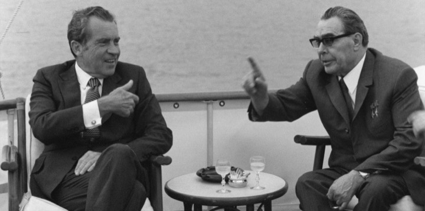

NYUGAT
1945
Február 4-11. Roosevelt, Sztálin és Churchill csúcstalálkozót tartanak Jaltában, a Krím-félszigeten.
Április 12. Elhunyt Franklin Delano Roosevelt, az Amerikai Egyesült Államok elnöke. Utóda az elnöki székben a korábbi alelnök: Harry S. Truman.
Április 25. Az Elba folyó mentén, Torgaunál találkoznak egymással az amerikai és szovjet csapatok.
Július 17.-Augusztus 2. Csúcstalálkozót tartanak Potsdamban a győztes nagyhatalmak vezetői
Augusztus 6. A Hirosima elleni atombomba-támadással demonstrálja az Egyesült Államok atomhatalmi státuszát.
Augusztus 9. Az Egyesül Államok újabb atomtámadása Japán ellen Nagaszakiban.
Április 12. Elhunyt Franklin Delano Roosevelt, az Amerikai Egyesült Államok elnöke. Utóda az elnöki székben a korábbi alelnök: Harry S. Truman.
Április 25. Az Elba folyó mentén, Torgaunál találkoznak egymással az amerikai és szovjet csapatok.
Július 17.-Augusztus 2. Csúcstalálkozót tartanak Potsdamban a győztes nagyhatalmak vezetői
Augusztus 6. A Hirosima elleni atombomba-támadással demonstrálja az Egyesült Államok atomhatalmi státuszát.
Augusztus 9. Az Egyesül Államok újabb atomtámadása Japán ellen Nagaszakiban.
1946
Január 10. Ötvenegy ország képviselőinek részvételével megnyílik az ENSZ első közgyűlés Londonban.
1947
Március 12. A Truman-doktrína meghirdetése. Truman elnök az Egyesült Államok Kongresszusában kijelenti, hogy az Egyesült Államok, saját biztonsága érdekében, a jövőben támogatást fog nyújtani a kommunizmus ellen küzdő államoknak.
Június 5. A Marshall-terv meghirdetése. Marshall amerikai külügyminiszter a Harvard Egyetemen bejelenti, hogy az Amerikai Egyesült Államok helyreállítási- és segélyprogramot indít az európai országok számára, hogy képesek legyenek helyrehozni a második világháború pusztításait.
Június 5. A Marshall-terv meghirdetése. Marshall amerikai külügyminiszter a Harvard Egyetemen bejelenti, hogy az Amerikai Egyesült Államok helyreállítási- és segélyprogramot indít az európai országok számára, hogy képesek legyenek helyrehozni a második világháború pusztításait.
1948
Március 20. A Szovjetunió és a nyugati hatalmak közötti ellentét miatt a németországi Szövetséges Ellenőrző Bizottság beszünteti tevékenységét.
Június 23. A berlini blokád kezdete. A szovjet hatóságok lezárják a Nyugat-Berlint Németország nyugati zónáival összekötő utakat.
Június 26. A nyugati hatalmak megnyitják a „berlini légihidat”. Nyugat-Berlin ellátását légi úton biztosítják.
Harry S. Truman demokrata párti elnököt újraválasztják az Egyesült Államokban, az 1948-as elnökválasztás során.
Június 23. A berlini blokád kezdete. A szovjet hatóságok lezárják a Nyugat-Berlint Németország nyugati zónáival összekötő utakat.
Június 26. A nyugati hatalmak megnyitják a „berlini légihidat”. Nyugat-Berlin ellátását légi úton biztosítják.
Harry S. Truman demokrata párti elnököt újraválasztják az Egyesült Államokban, az 1948-as elnökválasztás során.
1949
Április 4. Washingtonban az Észak-Atlanti Szerződés aláírásával megalakul az Észak-Atlanti Szerződés Szervezete (NATO) az Egyesült Államok, az Egyesült Királyság, Kanada, Franciaország, Olaszország, Portugália, Dánia, Norvégia, Belgium, Hollandia, Luxemburg és Izland részvételével.
Május 12. Szovjet-amerikai megállapodás alapján véget ér Berlin blokádja, újra lehetséges a közúti és vasúti közlekedés Nyugat-Berlin és Németország nyugati megszállási zónái között.
Május 12. Szovjet-amerikai megállapodás alapján véget ér Berlin blokádja, újra lehetséges a közúti és vasúti közlekedés Nyugat-Berlin és Németország nyugati megszállási zónái között.
1952
Május 26. Az Egyesült Államok, az Egyesült Királyság, Franciaország és a Német Szövetségi Köztársaság (NSZK) képviselői aláírják az úgynevezett „bonni keretszerződést” az NSZK egyenjogúságának elismeréséről. A dokumentum 1954. október 23-án lépett életbe, mely alapján az NSZK szuverén államként intézheti ügyeit. A dokumentum végső célként Németország egyesítését tűzte ki.
Dwight D. Eisenhower második világháborús tábornok nyeri az amerikai elnökválasztást, a Republikánus Párt jelöltjeként.
November 1. A Marshall-szigeteken felrobbantják az első amerikai kísérleti hidrogénbombát.
November 1. A Marshall-szigeteken felrobbantják az első amerikai kísérleti hidrogénbombát.
1953
Július 27. Panmindzsonban aláírják a koreai fegyverszünetet az amerikai ENSZ-haderő, valamint a koreai néphadsereg és a kínai önkéntesek között.
1956
Október 26-án kitör a szuezi válság. Gamal Abdel Nasszer egyiptomi államelnök egy nagygyűlésen bejelenti a szuezi csatorna államosítását. Akármilyen erőfeszítéseket tettek is külföldi kormányok ennek az intézkedésnek a visszavonatására, ezek mind eredménytelenek maradtak. A Szuezi-csatorna államosítása Nasszer részéről ellenlépés volt az Egyesült Államok magatartására. Az amerikai kormány korábbi ígéretek ellenére elutasította az asszuáni gát építésének pénzügyi támogatását, hogy (miután a Szovjetunió sem ajánlott fel semmiféle gazdasági segítséget a duzzasztógát létesítéséhez) ily módon éreztesse Egyiptommal a Nyugattól való teljes függését. Nasszer ezek után bejelentette a Szuezi-csatorna Társaság államosítását, hogy e megleckéztetés után visszaszerezze külpolitikai presztízsét. Ennek az intézkedésnek a hírére Londonban összeültek 22 ország képviselői, hogy Egyiptomnak ajánlatot tegyenek. Ebben azt követelik, hogy maradjon meg a csatorna nemzetközi jellege, s a Szuezi-csatornát használó valamennyi állam egyaránt vegyen részt ennek igazgatásában. Ám a Szovjetunió és Nasszer is elutasítja ezt a tervet. Ezek után Izrael, Franciaország és az Egyesült Királyság katonai beavatkozással próbálja megdönteni Nasszer uralmát.
Október 29-én izraeli csapatok a Sínai-félszigeten megtámadták az egyiptomi állásokat. Franciaország és az Egyesült Királyság ultimátumát, amely a harcok beszüntetését sürgette, Nasszer elutasította. Ekkor már az Egyesült Királyság és Franciaország is beavatkozik. Az ENSZ közgyűlése az Egyesült Államok és a Szovjetunió szavazatával elítéli a két hatalom eljárását. Az Egyesült Királyság és Franciaország végül enged és visszavonja csapatait.
Október 29-én izraeli csapatok a Sínai-félszigeten megtámadták az egyiptomi állásokat. Franciaország és az Egyesült Királyság ultimátumát, amely a harcok beszüntetését sürgette, Nasszer elutasította. Ekkor már az Egyesült Királyság és Franciaország is beavatkozik. Az ENSZ közgyűlése az Egyesült Államok és a Szovjetunió szavazatával elítéli a két hatalom eljárását. Az Egyesült Királyság és Franciaország végül enged és visszavonja csapatait.
1957
Március 9-én Eisenhower amerikai elnök bejelenti az úgynevezett Eisenhower-doktrínát. Az amerikai elnök ennek keretében aláír egy elvi nyilatkozatot, amelyben a Közel-Kelet államainak megígéri az Egyesült Államok katonai segítségét a kommunizmussal szemben. A nyilatkozat szerint a „közép-keleti nemzetek függetlenségének és integritásának megóvása életbevágóan fontos” az Egyesült Államok nemzeti érdekei és a „világbéke megőrzése” szempontjából. Ezeknek az országoknak, kérésükre erősebb gazdasági és katonai segítséget nyújtanának, amerikai intervenciós csapatok kiküldését is ideértve. Az 1956-os magyarországi felkelés és a szuezi válság a hidegháború kiéleződéséhez vezetett. A Szovjetunió növekvő befolyása miatti aggodalom nagyobb súlyt ad a Közel-Keletnek az amerikai külpolitikában, amely saját befolyási övezetének biztosítására és a szovjetek visszaszorítására irányul. John Foster Dulles amerikai külügyminiszter a biztonsági szerződéseknek az egész világot átfogó hálózatával és a nukleáris megtorlás kilátásba helyezésével érvényesíti ezt a politikát. Nem sokkal az Eisenhower-doktrína aláírása után a Földközi-tenger keleti részébe vezényelték a 6. amerikai flotta hajóit a jordániai Nasszer-barát lázadók megfélemlítésére. 1958-ban az Egyesült Államok 14000 tengerészgyalogossal támogatta Camille Chamount keresztény libanoni elnököt az arab nacionalistákkal szemben.
1958
Február 1-én felbocsátják a világűrbe az első amerikai műholdat.
Május 29-én, az algériai válság miatt Franciaország miniszterelnökévé nevezik ki az 1955 óta visszavonultan élő Charles de Gaulle-t. A francia közvéleményt megosztotta de Gaulle hatalomba való visszatérése. A nemzetgyűlés megerősítette de Gaulle kinevezését, hozzájárult egy alkotmánymódosításhoz és messzemenő felhatalmazást adott a miniszterelnöknek. De Gaulle meg van győződve róla, hogy csakis személyi hatalma mentheti meg az államot.
Május 29-én, az algériai válság miatt Franciaország miniszterelnökévé nevezik ki az 1955 óta visszavonultan élő Charles de Gaulle-t. A francia közvéleményt megosztotta de Gaulle hatalomba való visszatérése. A nemzetgyűlés megerősítette de Gaulle kinevezését, hozzájárult egy alkotmánymódosításhoz és messzemenő felhatalmazást adott a miniszterelnöknek. De Gaulle meg van győződve róla, hogy csakis személyi hatalma mentheti meg az államot.
1959
Május 11-én Genfben összeül az Egyesült Államok, Franciaország, az Egyesült Királyság és a Szovjetunió külügyminisztereinek értekezlete Németország és Berlin kérdésében. A két német állam megfigyelőket küld ki. Az értekezlet eredménytelenül végződik, mert a résztvevők mereven ragaszkodnak álláspontjaikhoz.
Szeptember 15-27. Dwight D. Eisenhower amerikai elnök meghívására Nyikita Szergejevics Hruscsov szovjet pártfőtitkár tizenkét napos hivatalos látogatást tett az Egyesült Államokban. A Szovjetunió ezzel viszonozza Richard Nixon amerikai alelnök ez év júliusában a Szovjetunióban és Lengyelországban tett látogatását. A két szuperhatalom vezető politikusainak látogatásai azokat az erőfeszítéseket hivatottak szolgálni, amelyek célja a kölcsönös közvetlen érdekegyeztetés, a hidegháború politikai keményedésének az enyhítése és a két vetélkedő tömb békés egymás mellett élésére vonatkozó szovjet tézis tisztázása. Az Eisenhower és Hruscsov között Camp Davidben, az elnök hivatalos vidéki rezidenciáján lezajlott politikai megbeszélések alapozták meg az a híres „Camp David-i szellemet”, amely a világméretű enyhülési politika kezdetét jelezte. Hruscsov kemény tárgyalások után visszavonja a Szovjetunió Berlinre vonatkozó 1958. november 27-i ultimátumát. A közös záróközleményben a két szuperhatalom azt az óhaját fejezi ki, hogy üljön össze négyhatalmi csúcsértekezlet Berlin kérdésének és Németország újraegyesítésének a tisztázására. Amerikai látogatása keretében Hruscsov gazdag programot bonyolít le. Kimerítő tárgyalásokat folytat amerikai cégek és bankárok képviselőivel, akik előnyöket remélnek a Hruscsov által kilátásba helyezett technológiai együttműködéstől. A magas szovjet vendég a Közép-Nyugaton, az Egyesült Államok éléskamrájában meglátogatja a nagy kukoricafarmokat, látogatást tesz az IBM multinacionális elektronikai konszernnél. Az amerikai-szovjet csúcstalálkozó a Kelet és a Nyugat közötti feszültség enyhítésére tett politikai erőfeszítések ellenére még nem jelenti a hidegháború végét. Mindkét fél továbbra is abban érdekelt, hogy a világpolitikában kézzelfogható politikai és katonai előnyöket szerezzen.
Szeptember 15-27. Dwight D. Eisenhower amerikai elnök meghívására Nyikita Szergejevics Hruscsov szovjet pártfőtitkár tizenkét napos hivatalos látogatást tett az Egyesült Államokban. A Szovjetunió ezzel viszonozza Richard Nixon amerikai alelnök ez év júliusában a Szovjetunióban és Lengyelországban tett látogatását. A két szuperhatalom vezető politikusainak látogatásai azokat az erőfeszítéseket hivatottak szolgálni, amelyek célja a kölcsönös közvetlen érdekegyeztetés, a hidegháború politikai keményedésének az enyhítése és a két vetélkedő tömb békés egymás mellett élésére vonatkozó szovjet tézis tisztázása. Az Eisenhower és Hruscsov között Camp Davidben, az elnök hivatalos vidéki rezidenciáján lezajlott politikai megbeszélések alapozták meg az a híres „Camp David-i szellemet”, amely a világméretű enyhülési politika kezdetét jelezte. Hruscsov kemény tárgyalások után visszavonja a Szovjetunió Berlinre vonatkozó 1958. november 27-i ultimátumát. A közös záróközleményben a két szuperhatalom azt az óhaját fejezi ki, hogy üljön össze négyhatalmi csúcsértekezlet Berlin kérdésének és Németország újraegyesítésének a tisztázására. Amerikai látogatása keretében Hruscsov gazdag programot bonyolít le. Kimerítő tárgyalásokat folytat amerikai cégek és bankárok képviselőivel, akik előnyöket remélnek a Hruscsov által kilátásba helyezett technológiai együttműködéstől. A magas szovjet vendég a Közép-Nyugaton, az Egyesült Államok éléskamrájában meglátogatja a nagy kukoricafarmokat, látogatást tesz az IBM multinacionális elektronikai konszernnél. Az amerikai-szovjet csúcstalálkozó a Kelet és a Nyugat közötti feszültség enyhítésére tett politikai erőfeszítések ellenére még nem jelenti a hidegháború végét. Mindkét fél továbbra is abban érdekelt, hogy a világpolitikában kézzelfogható politikai és katonai előnyöket szerezzen.
1960
Május 1. Egy U-2 típusú amerikai kémrepülőgépnek a Szovjetunió fölötti lelövése megrontja a szuperhatalmak közötti viszonyt. A szovjet légtér megsértése elleni tiltakozásul a szovjet küldöttség május 17-én elhagyja a Párizsban előző nap megkezdődött kelet-nyugati csúcsértekezletet. Az Egyesült Államok 33000 méter magasságban repülő U-2 típusú gépekkel 1958 óta folytat felderítést a Szovjetunió fölött.
Május 1-én a szovjeteknek első ízben sikerült az Urálban, Szverdlovszk közelében lelőni egy U-2-est. A pilóta Gary Powers megmenekül és szovjet fogságba esik. 1962 februárjában, Berlinben kicserélték Rudolf Abel szovjet kémmel. A repülőgép lelövése súlyos csapás az Egyesült Államoknak. Dwight D. Eisenhower elnök május 11-én hivatalosan megerősítette a felderítő repülők tényét. Az a kísérlete, hogy az U-2-esek további repüléseiről való hivatalos lemondással megmentse a csúcsértekezletet nem járt eredménnyel: Nyikita Hruscsov ultimátumszerűen követelte a kémrepülések beszüntetését és az Egyesült Államok bocsánatkérését követelte. Amikor Eisenhower ezt elutasította, a négyes csúcs összeomlott. A Szovjetuniónak azt az indítványát, hogy az ENSZ Biztonsági Tanácsa a lelőtt gép miatt ítélje el az Egyesült Államokat, mint agresszort, elutasítják.
Május 1-én a szovjeteknek első ízben sikerült az Urálban, Szverdlovszk közelében lelőni egy U-2-est. A pilóta Gary Powers megmenekül és szovjet fogságba esik. 1962 februárjában, Berlinben kicserélték Rudolf Abel szovjet kémmel. A repülőgép lelövése súlyos csapás az Egyesült Államoknak. Dwight D. Eisenhower elnök május 11-én hivatalosan megerősítette a felderítő repülők tényét. Az a kísérlete, hogy az U-2-esek további repüléseiről való hivatalos lemondással megmentse a csúcsértekezletet nem járt eredménnyel: Nyikita Hruscsov ultimátumszerűen követelte a kémrepülések beszüntetését és az Egyesült Államok bocsánatkérését követelte. Amikor Eisenhower ezt elutasította, a négyes csúcs összeomlott. A Szovjetuniónak azt az indítványát, hogy az ENSZ Biztonsági Tanácsa a lelőtt gép miatt ítélje el az Egyesült Államokat, mint agresszort, elutasítják.
1961
Január 20-én beiktatják hivatalába az USA 35. elnökeként John F. Kennedyt aki 44 évével az addigi legfiatalabb amerikai elnök.
Április 17-én az amerikai titkosszolgálat, a CIA vezetésével, kiképzett kubai emigránsok által indított támadás Kuba ellen kudarcot vall. A csapat április 10-én szállt partra a kubai Disznó-öbölben. Az Egyesült Államok Fidel Castro kubai miniszterelnök szovjetbarát politikája miatt fenyegetettnek érzi biztonságát a Karib-tenger térségében. Az amerikaiak abban reménykedtek, hogy az invázió kiváltja a Castro-ellenes csoportok felkelését, amelyhez a CIA véleménye szerint a fegyveres erők bizonyos egységei is csatlakoznának. Csakhogy az amerikaiak teljesen félreismerték a tényleges helyzetet. A kubaiak elkeseredett ellenállást tanúsítottak a partraszállókkal szemben, és néhány nap alatt legyőzték őket. A támadók nagy része életét vesztette, 1113 túlélőt foglyul ejtettek és politikai túszként kezeltek. A kubai emigránsok, akik az Egyesült Államokban forradalmi tanácsot alakítottak, a CIA-tól katonai kiképzést kaptak. Az Egyesült Államok hadfelszereléssel is ellátta őket, a többi között az amerikai légierő kiszolgált B-26 típusú harci repülőgépeivel. Az invázió előkészületei már 1960 májusában megkezdődtek. A meghiúsult támadás súlyos külpolitikai károkat okozott az Egyesült Államoknak, kiváltképpen a Szovjetunió tiltakozott igen éles formában. Nyikita Hruscsov szovjet pártfőtitkár Kennedy amerikai elnököt agresszornak minősítette és kubai szovjet intervencióval fenyegetőzött. Az Egyesült Államok nyugati szövetségesei is elhatárolták magukat az incidenstől. Az Egyesült Államokon belül a kritika főleg a CIA ellen irányult, amiért nem helytálló információkat szállított. Emellett, Kennedy utasításainak dacára, kirekesztették az invázióból annak a nem kommunista, forradalmi népi mozgalomnak a tagjait, amely a legütőképesebb ellenzéki csoportnak számít. Az Egyesült Államok és Kuba között megindulnak a tárgyalások a túszok kiszabadításáért. Castro előbb 28 millió dollárt kér, hogy gépeket vásárolhasson az épülő ipar számára. Eleanor Roosevelt bizottságot alakít az összeg összegyűjtésére. Az USA végül élelmiszert és gyógyszert szállít 53 millió dollár értékben.
Június 3-án és 4-én Bécsben találkozik egymással Kennedy amerikai elnök és Hruscsov szovjet pártfőtitkár, ahol leszerelési kérdésekről tárgyalnak, eredménytelenül.
Április 17-én az amerikai titkosszolgálat, a CIA vezetésével, kiképzett kubai emigránsok által indított támadás Kuba ellen kudarcot vall. A csapat április 10-én szállt partra a kubai Disznó-öbölben. Az Egyesült Államok Fidel Castro kubai miniszterelnök szovjetbarát politikája miatt fenyegetettnek érzi biztonságát a Karib-tenger térségében. Az amerikaiak abban reménykedtek, hogy az invázió kiváltja a Castro-ellenes csoportok felkelését, amelyhez a CIA véleménye szerint a fegyveres erők bizonyos egységei is csatlakoznának. Csakhogy az amerikaiak teljesen félreismerték a tényleges helyzetet. A kubaiak elkeseredett ellenállást tanúsítottak a partraszállókkal szemben, és néhány nap alatt legyőzték őket. A támadók nagy része életét vesztette, 1113 túlélőt foglyul ejtettek és politikai túszként kezeltek. A kubai emigránsok, akik az Egyesült Államokban forradalmi tanácsot alakítottak, a CIA-tól katonai kiképzést kaptak. Az Egyesült Államok hadfelszereléssel is ellátta őket, a többi között az amerikai légierő kiszolgált B-26 típusú harci repülőgépeivel. Az invázió előkészületei már 1960 májusában megkezdődtek. A meghiúsult támadás súlyos külpolitikai károkat okozott az Egyesült Államoknak, kiváltképpen a Szovjetunió tiltakozott igen éles formában. Nyikita Hruscsov szovjet pártfőtitkár Kennedy amerikai elnököt agresszornak minősítette és kubai szovjet intervencióval fenyegetőzött. Az Egyesült Államok nyugati szövetségesei is elhatárolták magukat az incidenstől. Az Egyesült Államokon belül a kritika főleg a CIA ellen irányult, amiért nem helytálló információkat szállított. Emellett, Kennedy utasításainak dacára, kirekesztették az invázióból annak a nem kommunista, forradalmi népi mozgalomnak a tagjait, amely a legütőképesebb ellenzéki csoportnak számít. Az Egyesült Államok és Kuba között megindulnak a tárgyalások a túszok kiszabadításáért. Castro előbb 28 millió dollárt kér, hogy gépeket vásárolhasson az épülő ipar számára. Eleanor Roosevelt bizottságot alakít az összeg összegyűjtésére. Az USA végül élelmiszert és gyógyszert szállít 53 millió dollár értékben.
Június 3-án és 4-én Bécsben találkozik egymással Kennedy amerikai elnök és Hruscsov szovjet pártfőtitkár, ahol leszerelési kérdésekről tárgyalnak, eredménytelenül.
1962
Február 20-án az első amerikai űrhajós, John Glenn Mercury típusú űrkabinban háromszor kerüli meg a Földet és az előre megadott területen száll le az Atlanti-óceánon. Első embert szállító űrhajójukkal az amerikaiak behozzák a Szovjetunió előnyét az űrhajózásban, ez jelentős lélektani hatást is gyakorol az Egyesült Államokban.
Október 22-én Kennedy amerikai elnök azt követeli a Szovjetuniótól, hogy szerelje le a Kubában létesített rakétatámaszpontjait és szállítsa el az oda telepített közepes hatótávolságú rakétákat. A kubai rakétaválság, az Egyesült Államok és a Szovjetunió közötti konfrontáció egy atomháború kitörésével fenyegeti a világbékét. Amerikai felderítő repülőgépek Kubában olyan katonai létesítményeket fényképeztek le, amelyek a Szovjetunió rakétatámaszpontjaihoz hasonlítanak. Kubából az Egyesült Államok délkeleti része egy esetleges szovjet támadás hatósugarába esne. A Szovjetunió arra számított, hogy a rakétatelepítéssel politikai nyomást gyakorolhat az Egyesült Államokra. 1959 óta, amióta az Egyesült Államok bojkottot hirdetett Fidel Castro rezsimje ellen, Kuba szorosabbra fűzte kapcsolatait a Szovjetunióval, Kuba és az Egyesült Államok között viszont tovább nőtt a feszültség (például a CIA által támogatott 1961-es disznó-öböli partraszállás miatt). Kennedy elnök azzal reagál az új értesülésekre, hogy tengeri blokádot rendel el Kuba ellen. Mivel több szovjet hajó és egy szovjet tengeralattjáró a záróövezet közelében tartózkodik, katonai konfrontáció, atomháború veszélye fenyeget, ám a szovjet hajók visszafordulnak vagy leállnak. John F. Kennedy amerikai elnök és Nyikita Hruscsov szovjet pártfőtitkár jegyzékváltás útján rendezi a válságot. Az Egyesült Államok garancianyilatkozatban vállalta, hogy nem hajt végre inváziót Kuba ellen, Hruscsov pedig október 28-án elrendelte, hogy ENSZ-ellenőrzés alatt szereljék le a kubai szovjet rakétatámaszpontokat.
Október 22-én Kennedy amerikai elnök azt követeli a Szovjetuniótól, hogy szerelje le a Kubában létesített rakétatámaszpontjait és szállítsa el az oda telepített közepes hatótávolságú rakétákat. A kubai rakétaválság, az Egyesült Államok és a Szovjetunió közötti konfrontáció egy atomháború kitörésével fenyegeti a világbékét. Amerikai felderítő repülőgépek Kubában olyan katonai létesítményeket fényképeztek le, amelyek a Szovjetunió rakétatámaszpontjaihoz hasonlítanak. Kubából az Egyesült Államok délkeleti része egy esetleges szovjet támadás hatósugarába esne. A Szovjetunió arra számított, hogy a rakétatelepítéssel politikai nyomást gyakorolhat az Egyesült Államokra. 1959 óta, amióta az Egyesült Államok bojkottot hirdetett Fidel Castro rezsimje ellen, Kuba szorosabbra fűzte kapcsolatait a Szovjetunióval, Kuba és az Egyesült Államok között viszont tovább nőtt a feszültség (például a CIA által támogatott 1961-es disznó-öböli partraszállás miatt). Kennedy elnök azzal reagál az új értesülésekre, hogy tengeri blokádot rendel el Kuba ellen. Mivel több szovjet hajó és egy szovjet tengeralattjáró a záróövezet közelében tartózkodik, katonai konfrontáció, atomháború veszélye fenyeget, ám a szovjet hajók visszafordulnak vagy leállnak. John F. Kennedy amerikai elnök és Nyikita Hruscsov szovjet pártfőtitkár jegyzékváltás útján rendezi a válságot. Az Egyesült Államok garancianyilatkozatban vállalta, hogy nem hajt végre inváziót Kuba ellen, Hruscsov pedig október 28-án elrendelte, hogy ENSZ-ellenőrzés alatt szereljék le a kubai szovjet rakétatámaszpontokat.
1963
Június 20-án megállapodás születik Genfben az Amerikai Egyesült Államok és a Szovjetunió között, hogy az amerikai elnök és a szovjet miniszterelnök rezidenciája között közvetlen géptávíró vonalat létesítenek. A „forró drótra” azért van szükség, mert a kubai rakétaválság idején hat órára megszakadt a kapcsolat az USA és a Szovjetunió között, ami jelentősen növelte az atomháború kitörésének kockázatát.
Június 26-án John F. Kennedy amerikai elnök nyugat-berlini látogatása során a schönebergi városháza előtt beszédet mond, amelyben az Egyesült Államoknak a nyugati szövetségesekhez, kivált a Német Szövetségi Köztársasághoz való rendíthetetlen hűségét hangsúlyozza. Szónoklatát zárva németül ezt mondja: „Ich bin ein Berliner” (Berlini vagyok). A beszéd után az elnök a Charley ellenőrzési pontnál megtekinti a berlini falat. Utána a Freie Universität hallgatói előtt kijelenti, hogy változatlanul hisz Németország újraegyesítésében. Kennedy kijelentéseit az egész NSZK-ban lelkesedéssel fogadják.
Augusztus 5-én az atomhatalmak, az Egyesült Államok, a Szovjetunió és az Egyesült Királyság Moszkvában aláírják az atomcsend-egyezményt. A szuperhatalmak kibontakozó enyhülési politikájának része a szerződés, mely a kubai rakétaválság ijesztő tapasztalataira való reagálásként indult meg. A szerződés kötelezi az aláíró feleket a légkörben, a világűrben és a víz alatt végrehajtott nukleáris fegyverkísérletek beszüntetésére. A Kínai Népköztársaság és Franciaország nem csatlakozik a szerződéshez.
November 22-én, országos körútja során John F. Kennedy amerikai elnököt a texasi Dallasban meggyilkolják. Kennedy volt az USA első katolikus elnöke. Új gazdasági- és szociálpolitikai elképzeléseket tűzött ki az amerikai társadalom elé, amikor új határok („New Frontier”Ö meghódításáról beszélt. A „szegénység elleni harca” nagy érdeklődést keltett. A külpolitikában, amelyet megzavart a kubai rakétaválság és a vietnami konfliktus, a Szovjetunióval való békés egymás mellett élést proklamálta. Utóda addigi alelnöke Lyndon B. Johnson lett.
Június 26-án John F. Kennedy amerikai elnök nyugat-berlini látogatása során a schönebergi városháza előtt beszédet mond, amelyben az Egyesült Államoknak a nyugati szövetségesekhez, kivált a Német Szövetségi Köztársasághoz való rendíthetetlen hűségét hangsúlyozza. Szónoklatát zárva németül ezt mondja: „Ich bin ein Berliner” (Berlini vagyok). A beszéd után az elnök a Charley ellenőrzési pontnál megtekinti a berlini falat. Utána a Freie Universität hallgatói előtt kijelenti, hogy változatlanul hisz Németország újraegyesítésében. Kennedy kijelentéseit az egész NSZK-ban lelkesedéssel fogadják.
Augusztus 5-én az atomhatalmak, az Egyesült Államok, a Szovjetunió és az Egyesült Királyság Moszkvában aláírják az atomcsend-egyezményt. A szuperhatalmak kibontakozó enyhülési politikájának része a szerződés, mely a kubai rakétaválság ijesztő tapasztalataira való reagálásként indult meg. A szerződés kötelezi az aláíró feleket a légkörben, a világűrben és a víz alatt végrehajtott nukleáris fegyverkísérletek beszüntetésére. A Kínai Népköztársaság és Franciaország nem csatlakozik a szerződéshez.
November 22-én, országos körútja során John F. Kennedy amerikai elnököt a texasi Dallasban meggyilkolják. Kennedy volt az USA első katolikus elnöke. Új gazdasági- és szociálpolitikai elképzeléseket tűzött ki az amerikai társadalom elé, amikor új határok („New Frontier”Ö meghódításáról beszélt. A „szegénység elleni harca” nagy érdeklődést keltett. A külpolitikában, amelyet megzavart a kubai rakétaválság és a vietnami konfliktus, a Szovjetunióval való békés egymás mellett élést proklamálta. Utóda addigi alelnöke Lyndon B. Johnson lett.
1964
Augusztus 2-4. A Tonkini incidenst követően az USA már hivatalosan is hadviselő fél lett Vietnamban. Amerikai vezénylet alatt álló dél-vietnami őrnaszádok által a Tonkini-öböl két észak-vietnami szigete ellen július 30-án végrehajtott rajtaütés után augusztus elején két amerikai rombolóra tüzet nyitnak észak-vietnami torpedónaszádok. A tonkini incidens ürügyet szolgáltatott az Amerikai Egyesült Államoknak arra, hogy a saigoni Amerika-barát kormány oldalán közvetlenül is beavatkozzon a vietnami harcokba. Augusztus 7-én az amerikai kongresszus olyan felhatalmazást fogadott el, amely szabad kezet adott az elnöknek haderő bevetésére. Az Egyesült Államok már 1964 elején is titkos hadműveleteket folytatott Észak-Vietnam ellen, s ezért az amerikai kormányt felelősség terheli a Vietkong által a saigoni diktatórikus rezsim ellen indított partizánháborúért. Hírügynökségi jelentések mindamellett arra utalnak, hogy a „kommunisták erejének döntő forrása Dél-Vietnamban keresendő”. A dél-vietnami kormány fokozódó gyengülése, amelyben közrejátszott az, hogy polgári körökben is nőtt a vele szembeni ellenkezés, az Egyesült Államok délkelet-ázsiai befolyását veszélyeztette. Titkos szabotázsakciókkal, amelyekben az amerikai titkosszolgálat is részt vett, el akarták vágni a Vietkong utánpótlását, el akarták riasztani a hanoi kormányt a dél-vietnami ellenzék támogatásától. A tonkini incidens után az Egyesült Államok 1965 februárjában megkezdi Észak-Vietnam szünet nélküli bombázását.
1966
Július 1-én Franciaország ugyan politikailag nem, de katonailag kilép a NATO-ból. A NATO katonai szervezetéből való kilépéssel Charles de Gaulle francia köztársasági elnök folytatja a francia nagyhatalmi tervek megvalósítását. A francia haderő önállóvá válik és nincs többé alárendelve a NATO-parancsnokságnak. Saját katonai erejét növelendő, Franciaország már 1960-ban megkezdte atomfegyvere kifejlesztését. De Gaulle célja Franciaország hegemóniája a nagyhatalmaktól független Európában. Az amerikai befolyás visszaszorítása érdekében de Gaulle a hatvanas évek közepétől a keleti tömb államaihoz való közeledés politikáját folytatja.
1967
Január 27-én Londonban, Washingtonban és Moszkvában amerikai-brit-szovjet szerződést írnak alá, a világűr kutatásáról és békés felhasználásáról.
Április 15-én Martin Luther King fekete polgárjogi vezető irányítása alatt New Yorkban több mint 350 000 ember tüntet a vietnami háború ellen. A délkelet-ázsiai amerikai elkötelezettséget mind több bírálat éri. Világszerte feltűnést kelt, hogy Muhammad Ali, alias Cassius Clay fekete ökölvívó-bajnok a texasi Houstonban április 28-án megtagadja a katonai szolgálatot. Az év végéig az Egyesült Államok 486 000 főre emelte a Vietnamban harcoló katonáinak számát. Az Észak- és Dél-Vietnam határán végrehajtott légi offenzívával, amelynek során növényvédő szerek kiszórásával „lombtalanítják” az erdőket, hatalmas környezeti károkat okozva, a háború új szakasza kezdődik.
Április 15-én Martin Luther King fekete polgárjogi vezető irányítása alatt New Yorkban több mint 350 000 ember tüntet a vietnami háború ellen. A délkelet-ázsiai amerikai elkötelezettséget mind több bírálat éri. Világszerte feltűnést kelt, hogy Muhammad Ali, alias Cassius Clay fekete ökölvívó-bajnok a texasi Houstonban április 28-án megtagadja a katonai szolgálatot. Az év végéig az Egyesült Államok 486 000 főre emelte a Vietnamban harcoló katonáinak számát. Az Észak- és Dél-Vietnam határán végrehajtott légi offenzívával, amelynek során növényvédő szerek kiszórásával „lombtalanítják” az erdőket, hatalmas környezeti károkat okozva, a háború új szakasza kezdődik.
1968
Január 30-án a Vietkong és az észak-vietnámi csapatok megkezdik a „Tet-offenzívát” amellyel fordulat következik be a vietnami háborúban és kezdetét veszi Vietnamban az Egyesült Államok katonai összeomlása. A Vietkong alakulatai a dél-vietnami Saigonban betörnek az amerikai nagykövetségre és megszállják. Más dél-vietnami városokban is támadásra kerül sor. Az offenzíva elhúzódása, intenzitása, ütőereje és mozgékonysága az Egyesült Államokban sokkot vált ki. Az amerikai kifárasztási taktika csődöt mondott. Lyndon B. Johnson az előtt az alternatíva előtt áll, hogy a katonák követelésének eleget téve csapaterősítéseket küld, ami az Egyesült Államok teljese katonai elkötelezettségét jelentené Vietnamban, vagy elutasítja a csapatköveteléseket és ezzel beismeri a Vietnamban folytatott amerikai politika kudarcát. A katonai helyzetre és az amerikai társadalomban egyre erősödő bírálatokra való tekintettel az elnök májusban a tárgyalások megkezdése mellett dönt.
Áprilsi 4-én a Tennessee állambeli Memphisben Martin Luther King amerikai polgárjogi harcos 39 évesen egy fehér fanatikus merényletének esik áldozatul. King, baptista lelkész az ötvenes évek óta volt egyik kiemelkedő harcosa a színesek egyenjogúsításáért küzdő polgárjogi mozgalomnak. Erőszakmentes engedetlenségi kampányt hirdetett. 1964-ben Nobel-békedíjjal tüntették ki. Fellépése miatt, főleg az Egyesült Államok déli államaiban, többször is börtönbe került. Halála súlyos zavargásokat vált ki. Májusban, Franciaországban diáktüntetések után polgárháborúszerű zavargásokra, vadsztrájkokra és gyárfoglalásokra kerül sor. A párizs-nanterre-i egyetem bölcsészkarának bezárása Franciaországban országos tiltakozó mozgalmat vált ki, amelyhez a munkásság jelentős része is csatlakozik, s amely a gazdasági és társadalmi viszonyokkal való mély elégedetlenségnek a kifejezése. Az akciók (tüntetések, sztrájkok és gyárfoglalások) a kormány meglehetősen brutális fellépése folytán polgárháborúszerű méreteket öltenek és államválsághoz vezetnek. Míg a diákellenzék (akárcsak az NSZK-ban) főleg forradalmi célokat követ, a szakszervezetek arra használják ki a helyzetet, hogy harcot indítsanak szociális követeléseikért. Időnként ötmillió francia is sztrájkol, béremeléseket, rövidebb munkaidőt és a munkavállalók beleszólási jogát követelve. Az NSZK-ban elsősorban diákok és a szakszervezeti ifjúság bizonyos részei bírálják alapjaiban a tőkés gazdasági és társadalmi rendet. A többi között a szükségállapot-törvények elfogadása ellen tiltakoznak. Az 1968. április 11-én Rudi Dutschke, a Szocialista Német Diákszövetség (SDS) elnöke ellen elkövetett merénylet után a tiltakozások elsősorban az Axel Springer kiadó ellen irányulnak, amelyet a diákmozgalomról való beszámolók ellenséges szenvedélyeket keltő mivolta miatt közvetve felelőssé tesznek a Dutschke elleni merényletért.
Június 6-án Los Angelesben megölik Robert Kennedy szenátort, a Demokrata Párt elnökjelölt-aspiránsát. Kennedynek jó esélyei voltak az elnöki cím megszerzésére, határozottan ellenezte a faji megkülönbözetést és bírálta Lyndon B. Johnson elnök vietnami politikáját.
Július 1-én több mint 100 állam írja alá Londonban, Washingtonban és Moszkvában az atomsorompó-szerződést a nukleáris fegyverek további elterjedésének megakadályozásáról.
Áprilsi 4-én a Tennessee állambeli Memphisben Martin Luther King amerikai polgárjogi harcos 39 évesen egy fehér fanatikus merényletének esik áldozatul. King, baptista lelkész az ötvenes évek óta volt egyik kiemelkedő harcosa a színesek egyenjogúsításáért küzdő polgárjogi mozgalomnak. Erőszakmentes engedetlenségi kampányt hirdetett. 1964-ben Nobel-békedíjjal tüntették ki. Fellépése miatt, főleg az Egyesült Államok déli államaiban, többször is börtönbe került. Halála súlyos zavargásokat vált ki. Májusban, Franciaországban diáktüntetések után polgárháborúszerű zavargásokra, vadsztrájkokra és gyárfoglalásokra kerül sor. A párizs-nanterre-i egyetem bölcsészkarának bezárása Franciaországban országos tiltakozó mozgalmat vált ki, amelyhez a munkásság jelentős része is csatlakozik, s amely a gazdasági és társadalmi viszonyokkal való mély elégedetlenségnek a kifejezése. Az akciók (tüntetések, sztrájkok és gyárfoglalások) a kormány meglehetősen brutális fellépése folytán polgárháborúszerű méreteket öltenek és államválsághoz vezetnek. Míg a diákellenzék (akárcsak az NSZK-ban) főleg forradalmi célokat követ, a szakszervezetek arra használják ki a helyzetet, hogy harcot indítsanak szociális követeléseikért. Időnként ötmillió francia is sztrájkol, béremeléseket, rövidebb munkaidőt és a munkavállalók beleszólási jogát követelve. Az NSZK-ban elsősorban diákok és a szakszervezeti ifjúság bizonyos részei bírálják alapjaiban a tőkés gazdasági és társadalmi rendet. A többi között a szükségállapot-törvények elfogadása ellen tiltakoznak. Az 1968. április 11-én Rudi Dutschke, a Szocialista Német Diákszövetség (SDS) elnöke ellen elkövetett merénylet után a tiltakozások elsősorban az Axel Springer kiadó ellen irányulnak, amelyet a diákmozgalomról való beszámolók ellenséges szenvedélyeket keltő mivolta miatt közvetve felelőssé tesznek a Dutschke elleni merényletért.
Június 6-án Los Angelesben megölik Robert Kennedy szenátort, a Demokrata Párt elnökjelölt-aspiránsát. Kennedynek jó esélyei voltak az elnöki cím megszerzésére, határozottan ellenezte a faji megkülönbözetést és bírálta Lyndon B. Johnson elnök vietnami politikáját.
Július 1-én több mint 100 állam írja alá Londonban, Washingtonban és Moszkvában az atomsorompó-szerződést a nukleáris fegyverek további elterjedésének megakadályozásáról.
1969
Január 20. Richard Nixon az Amerikai Egyesült Államok 37. elnökeként hivatalba lép.
Április 27-én Franciaország 1958 óta hivatalban lévő köztársasági elnöke, Charles de Gaulle, mivel népszavazáson elvetik az általa indítványozott közigazgatási átszervezést és szenátusi reformot, lemond tisztségéről. De Gaulle pozícióját az 1968 májusi zavargások erősen meggyengítették, az, hogy ennek ellenére képes volt megnyerni az elnökválasztást, a francia lakosság többségének rend és nyugalom iránti igényének számlájára írható. Ennek ellenére, már 1968 előtt is mind nagyobb elutasításra talált de Gaulle különutas politikája. A NATO-n belüli francia elkülönölés nem hozta meg a kívánt eredményt. De Gaulle vezetésével Franciaország vezető hatalommá szeretett volna válni „az Atlanti-óceántól az Urálig terjedő Európában”. Ehhez az igényhez azonban Franciaországnak nem volt meg sem a kellő belpolitikai koherenciája, sem a pénzügyi lehetősége. Ráadásul az atomprogramhoz hasonló vállalkozásokra tékozolták el azt a pénzt, amelyre a szociális és gazdasági reformokhoz lett volna szükség. De Gaulle ráadásul autoritárius-patriarchális kormányzati stílust valósított meg, ami egyre inkább ellenkezést váltott ki.
Augusztus 15 és 17 között rendezik meg 300 000 résztvevővel a woodstocki fesztivált, mely a hatvanas évek ifjúsági szubkultúrájának mitikus eseményévé, egyben a nyugati ellenkulturális korszak egyik szimbólumává válik.
Április 27-én Franciaország 1958 óta hivatalban lévő köztársasági elnöke, Charles de Gaulle, mivel népszavazáson elvetik az általa indítványozott közigazgatási átszervezést és szenátusi reformot, lemond tisztségéről. De Gaulle pozícióját az 1968 májusi zavargások erősen meggyengítették, az, hogy ennek ellenére képes volt megnyerni az elnökválasztást, a francia lakosság többségének rend és nyugalom iránti igényének számlájára írható. Ennek ellenére, már 1968 előtt is mind nagyobb elutasításra talált de Gaulle különutas politikája. A NATO-n belüli francia elkülönölés nem hozta meg a kívánt eredményt. De Gaulle vezetésével Franciaország vezető hatalommá szeretett volna válni „az Atlanti-óceántól az Urálig terjedő Európában”. Ehhez az igényhez azonban Franciaországnak nem volt meg sem a kellő belpolitikai koherenciája, sem a pénzügyi lehetősége. Ráadásul az atomprogramhoz hasonló vállalkozásokra tékozolták el azt a pénzt, amelyre a szociális és gazdasági reformokhoz lett volna szükség. De Gaulle ráadásul autoritárius-patriarchális kormányzati stílust valósított meg, ami egyre inkább ellenkezést váltott ki.
Augusztus 15 és 17 között rendezik meg 300 000 résztvevővel a woodstocki fesztivált, mely a hatvanas évek ifjúsági szubkultúrájának mitikus eseményévé, egyben a nyugati ellenkulturális korszak egyik szimbólumává válik.
1970
Április 16-án Bécsben, a Belvedere-palotában, ünnepélyes keretek között kezdetüket veszik a szovjet-amerikai megbeszélések a stratégiai hadászati fegyverrendszerek korlátozásáról (SALT Strategic Arms Limitation Talks). Az amerikai.szovjet előkészítő megbeszélések még az előző év novemberében kezdődtek meg Helsinkiben. A kétoldalú leszerelési tárgyalások megindítása, az enyhülési politika a fegyverkezési verseny korlátozására irányul. A nukleáris és hadászati patthelyzet folytán katonai fölény már nemigen szerezhető meg, a mérhetetlen fegyverkezési költségek viszont igen nagy gazdasági terhet jelentenek mindkét félnek.
November 9-én 79 éves korában elhunyt Charles de Gaulle politikus és tábornok, a francia V. köztársaság első elnöke.
Augusztus 12. Willy Brandt az NSZK kancellárja és Walter Scheel az NSZK külügyminisztere Moszkvában Alekszej Koszigin szovjet miniszterelnökkel és Andrej Gromiko szovjet külügyminiszterrel aláírják a német-szovjet szerződést. A Brandt-kormány új keleti politikája keretében a békés egymás mellett élésre törekszik, így már márciusban, az NSZK kezdeményezésére sor került az első belnémet csúcstalálkozóra Willy Brandt nyugat-német kancellár és Willi Stoph kelet-német miniszterelnök között. A kölcsönös megértésre irányuló politika sok könnyítést hoz az embereknek Keleten és Nyugaton egyaránt. Az új politika folyományaként születik meg a moszkvai egyezmény is, mely lemond az erőszakról. Később december 7-én, Varsóban aláírják a német-lengyel szerződést a Lengyel Népköztársaság és a Német Szövetségi Köztársaság közötti kölcsönös kapcsolatok normalizálásáról. Ez a két alapdokumentum fogja meghatározni a nyugat-német keleti politikát a következő.
November 9-én 79 éves korában elhunyt Charles de Gaulle politikus és tábornok, a francia V. köztársaság első elnöke.
Augusztus 12. Willy Brandt az NSZK kancellárja és Walter Scheel az NSZK külügyminisztere Moszkvában Alekszej Koszigin szovjet miniszterelnökkel és Andrej Gromiko szovjet külügyminiszterrel aláírják a német-szovjet szerződést. A Brandt-kormány új keleti politikája keretében a békés egymás mellett élésre törekszik, így már márciusban, az NSZK kezdeményezésére sor került az első belnémet csúcstalálkozóra Willy Brandt nyugat-német kancellár és Willi Stoph kelet-német miniszterelnök között. A kölcsönös megértésre irányuló politika sok könnyítést hoz az embereknek Keleten és Nyugaton egyaránt. Az új politika folyományaként születik meg a moszkvai egyezmény is, mely lemond az erőszakról. Később december 7-én, Varsóban aláírják a német-lengyel szerződést a Lengyel Népköztársaság és a Német Szövetségi Köztársaság közötti kölcsönös kapcsolatok normalizálásáról. Ez a két alapdokumentum fogja meghatározni a nyugat-német keleti politikát a következő.
1971
Szeptember 3-án az Egyesült Államok, Franciaország, az Egyesült Királyság és a Szovjetunió négyoldalú egyezményt ír alá Berlinről, melyben megerősítik a Berlinért való felelősségüket és Berlin különleges státusát: Nyugat-Berlin nem szerves része a Német Szövetségi Köztársaságnak, hanem a polgármester és a szenátus kormányozza. A Szovjetunió kötelezettséget vállal arra, hogy fenntartja és megkönnyíti a személy- és teherforgalmat Nyugat-Berlin és az NSZK között. A négyhatalmi egyezményhez kapcsolódva az NSZK, Nyugat-Berlin és az NDK olyan megállapodást köt, amely megkönnyíti a tranzitforgalmat és szabályozza a nyugat-berliniek látogatásait eszerint évente összesen 30 napot tölthetnek Kelet-Berlinben és az NDK-ban.
Augusztus 17-én az Egyesült Államok hivatalosan felmondja ama kötelezettségét, hogy a dollárt bármikor aranyra váltsa be. Ezzel véget ér az 1945 utáni világgazdaságot stabilizáló bretton woods-i rendszer.
Augusztus 17-én az Egyesült Államok hivatalosan felmondja ama kötelezettségét, hogy a dollárt bármikor aranyra váltsa be. Ezzel véget ér az 1945 utáni világgazdaságot stabilizáló bretton woods-i rendszer.

1972
Február 21-én Richard Nixon, az amerikai elnökök közül elsőként a Kínai Népköztársaságba látogat és Mao Ce-tung kínai pártvezetpvel megállapodik az amerikai-kínai kapcsolatok normalizálásában. Három hónappal később, május 22 és 30 között Nixon látogatást tesz a Szovjetunióban. A második világháború óta ő az első amerikai elnök, aki a Szovjetunióba utazik. Moszkvában az Egyesült Államok és a Szovjetunió megköti a SALT-1 szerződést a hadászati fegyverek korlátozásáról, május 26-án. Nixon már 1969-ben, hivatalba lépésekor a két kommunista nagyhatalommal, a Szovjetunióval és Kínával való megállapodást nyilvánított az amerikai külpolitika egyik legfőbb céljának. Miközben az Egyesült Államok vietnami beavatkozását a világ közvéleménye előtt továbbra is a kommunizmus terjeszkedése elleni eszközként próbálta igazolni, kísérletet tett arra, hogy rendezze a kapcsolatokat a két, egymással farkasszemet néző nagyhatalommal. Nixon elnöknek Mao Ce-tungnál tett látogatását, amelyet Henry Kissinger, Nixon tanácsadója már régóta előkészített, a sajtóban „az évszázad csúcstalálkozójának” nevezték. A február 28-án véget érő találkozó eredménye egy Kína történetében példa nélkül álló, offenzív a Nyugat felé irányuló külpolitika, amelyet Csou En-laj miniszterelnök, a pragmatikus politikus szorgalmazott. Amerika ennek fejében kivonja csapatait Tajvanról. Az Egyesült Államok sarkalatos külpolitikai tétele, miszerint „csak egy Kína van”, immár a Kínai Népköztársaságra vonatkozott. Három hónappal később Nixon Moszkvába látogatott, Jóllehet, közben az amerikai elnök parancsára a Szovjetunió által támogatott Vietkong utánpótlási útvonalait bombázta az Egyesült Államok légiereje, ez nem zavarta a találkozót. Mindkét hatalom fontosnak tartja a megállapodást, amely enyhülést hozott a kapcsolataikban. A környezetvédelemre, a világűr kutatására, a műszaki és természettudományos kutatásokban való együttműködésre vonatkozó megállapodások mellett a tárgyalások legfontosabb eredménye a SALT-1 szerződés, amely a stratégiai hadászati fegyverkezés korlátozását célozza. Elmondható, hogy Nixon nyitása az egymással szembenálló kommunista nagyhatalmak felé, mindkettő kommunista országot a nyugati kapcsolatainak javítására ösztönözte.
1973
Január 27-én, Párizsban az Egyesült Államok, Észak-Vietnam, Dél-Vietnam és a Dél-Vietnami Ideiglenes Forradalmi Kormány (Vietkong) által Párizsban megkötött fegyverszüneti egyezmény szerint az Egyesült Államok kivonja katonai erőit Vietnamból, megállapodnak a háború befejezéséről és a béke helyreállításáról. Ugyanezen a napon az Egyesült Államok és Észak-Vietnam megegyezik az amerikai hadifoglyok elengedésében, az amerikai csapatok kivonásában és az azonnali tűzszünetben. Ezzel az amerikaiak vietnami beavatkozása véget ért, a háború azonban még nem. Az Egyesült Államok katonai elkötelezettsége a kommunizmus délkelet-ázsiai feltartóztatására, amely Kennedy és Johnson elnökök idejében kezdődött, majd Richard Nixon alatt folytatódott, 58000 amerikai katona életébe került és mély válságba sodorta az országot. A terep adottságait ismerő vietnamiakkal szembeni dzsungelháborút minden hagyományos katonai eszköz bevetésével sem sikerült az Egyesült Államoknak megnyernie. Részben a katonai kudarcok folytán, részben az Egyesült Államokban mind nagyobb arányokat öltő háborúellenes mozgalomra való tekintettel végül megindultak a fegyverszüneti tárgyalások. 1972 tavaszán az Egyesült Államok még kísérletet tett, hogy fokozottabb légi offenzívával kicsikarjon valamilyen döntést, ám sem az észak-vietnami fővárosnak, Hanoinak, vagy Hai Phongnak, e fontos kikötővárosnak a bombázásával, sem az észak-vietnami kikötők elaknásításával nem sikerült megállítani a Vietkong előretörését. Hasztalan kísérletezett Nguyen Van Thieu dél-vietnami elnök is azzal, hogy meghiúsítsa a fegyverszüneti egyezményt, amelyért a két tárgyalópartner, Henry Kissinger, az amerikai elnök tanácsadója és Le Duc Tho, észak-vietnami különmegbízott később megkapta a Nobel-békedíjat. A Dél-Vietnami Ideiglenes Forradalmi Kormány elismerésével Nguyen Van Thieu pozíciói döntő mértékben meggyengültek.
Január 31-én, Bécsben a NATO és a Varsói Szerződés 19 tagállama megkezdi a konzultációs megbeszéléseket a kétoldalú kiegyensúlyozott csapatcsökkentésről (MBFR Mutual Balanced Forces Reductions). A konferenciát október 30-án nyitják meg.
Június 22-én Leonyid Brezsnyev szovjet pártfőtitkárnak az Egyesült Államokban tett látogatása során aláírják az Egyesült Államok és a Szovjetunió megállapodását a katonai konfrontáció kerüléséről, és egy atomháborúnak konzultációk útján való elkerüléséről.
Július 3-án, Helsinkiben megnyitják az Európai Biztonsági és Együttműködési Értekezletet.
Január 31-én, Bécsben a NATO és a Varsói Szerződés 19 tagállama megkezdi a konzultációs megbeszéléseket a kétoldalú kiegyensúlyozott csapatcsökkentésről (MBFR Mutual Balanced Forces Reductions). A konferenciát október 30-án nyitják meg.
Június 22-én Leonyid Brezsnyev szovjet pártfőtitkárnak az Egyesült Államokban tett látogatása során aláírják az Egyesült Államok és a Szovjetunió megállapodását a katonai konfrontáció kerüléséről, és egy atomháborúnak konzultációk útján való elkerüléséről.
Július 3-án, Helsinkiben megnyitják az Európai Biztonsági és Együttműködési Értekezletet.
1974
Augusztus 9-én Richard Nixon, az Egyesült Államok 37. elnöke egy televíziós beszédben bejelenti, hogy lemond az elnöki tisztségről. Az ok a washingtoni Watergate-épületben, a Demokrata Párt főhadiszállásán 1972. június 17-én történt betörés, amelyet a Fehér Ház fedezett. A betörők, csupa hajdani FBI- vagy CIA-ügynök, valamint az elnök újraválasztását szervező bizottság munkatársai lebuktak, amikor kamerákkal, lehallgató-készülékekkel és mikrofonokkal behatoltak az épületbe. Az 1972-es választási kampány során a Watergate-ügynek alig szenteltek figyelmet, ám közben Nixon elnök számos munkatársára rábizonyosodott, hogy része volt a betörésben, vagy tudomása volt róla. Csak az elnök tagadta sokáig, hogy bármit is tudott volna munkatársai mesterkedéseiről. Amikor aztán végül bevallotta, hogy már hat nappal a betörés után megbeszélte tanácsadóival ennek politikai konzekvenciáit, a Képviselőház jogi bizottsága az elnök leváltására irányuló, úgynevezett „impeachment”-eljárás megindítását. Ezek után a republikánus frakció augusztus 6-án azt ajánlotta Nixonnak, hogy mondjon le, ám az elnök csak két nappal később szánta rá magát a visszavonulásra, amikor már végképp sehonnan nem remélhetett támogatást. Nixon utóda az addigi alelnök, Gerald Ford lett, aki egyik első intézkedésével kegyelemben részesítette Nixont.
1975
Július 17-én az első szovjet-amerikai űrmanőver során összekapcsolják az Apollo-18 és a Szojuz-19 űrkabinját.
Augusztus 1-én Helsinkiben 35 európai és észak-amerikai ország aláírja az Európai Biztonsági és Együttműködési Értekezlet záróokmányát, amelynek előkészítése 1973 óta folyt Genfben. Az okmány sarkalatos pontjai: valamennyi állam szuverén egyenlősége, ha eltérő is társadalmi rendszerük. Az erőszak alkalmazásának tilalma, a határok sérthetetlensége, a konfliktusok békés rendezése, a mások belügyeibe való be nem avatkozás, az emberi jogok tiszteletben tartása, az alapvető szabadságjogok érvényesítése és a népek önrendelkezési joga.
Augusztus 1-én Helsinkiben 35 európai és észak-amerikai ország aláírja az Európai Biztonsági és Együttműködési Értekezlet záróokmányát, amelynek előkészítése 1973 óta folyt Genfben. Az okmány sarkalatos pontjai: valamennyi állam szuverén egyenlősége, ha eltérő is társadalmi rendszerük. Az erőszak alkalmazásának tilalma, a határok sérthetetlensége, a konfliktusok békés rendezése, a mások belügyeibe való be nem avatkozás, az emberi jogok tiszteletben tartása, az alapvető szabadságjogok érvényesítése és a népek önrendelkezési joga.
1977
Január 20-án beiktatják hivatalába Jimmy Cartert, mint az Amerikai Egyesült Államok 39. elnökét.
Szeptember 22 és 23 között Jimmy Carter elnöke és Cyrus Vance amerikai külügyminiszter a szovjet felekkel való tárgyalás eredményeképpen elérik, hogy a hadászati fegyverek korlátozásáról kötött SALT-1 egyezmény meghosszabbítsák.
Szeptember 22 és 23 között Jimmy Carter elnöke és Cyrus Vance amerikai külügyminiszter a szovjet felekkel való tárgyalás eredményeképpen elérik, hogy a hadászati fegyverek korlátozásáról kötött SALT-1 egyezmény meghosszabbítsák.
1978
A Vörös Brigádok terrorszervezet Olaszországban elrabolja Aldo Moro kereszténydemokrata politikust, az ország korábbi miniszterelnökét. Nyolc nappal később megtalálják az agyonlőtt Moro holttestét. Ezzel a merénylettel tetőzik a hetvenes évek nyugat-európai szélsőbaloldali terrorizmusa amelyet az olasz Vörös Brigádok mellett a nyugat-német Vörös Hadsereg Frakció, vagy a francia Action Directe képviselt.
1979
Január 16-án Reza Pahlavi iráni sah, miután egy kormányzótanácsot hoz létre, hogy helyettesítse őt, elhagyja Iránt, előbb Egyiptomba, majd Marokkóba távozik. Február 1-én 15 évi száműzetés után Párizsból hazatér Iránba Khomeini ajatollah, az iráni síiták vallási vezetője, majd két nappal később bejelenti a forradalmi tanács megalakulását, mely a sah kiadatását és felelősségre vonását követeli. A már az előző évben kitört iráni forradalom véráldozatokkal folytatódik. Február 15-én az iszlám népbíróságok megkezdik a pereket a sah hívei ellen, s ezek többnyire azonnal az elítélt kivégzését vonják maguk után. A következő hónapokban emberek százait végzik ki. A külföldről érkező tiltakozásokat Khomeini ajatollah visszautasítja, közölve, hogy az iszlám jog nem ítélhető meg a nyugati jogfelfogás alapján. Iránon belül is hangot kap a tiltakozás, baloldali szervezetek kifogásolják, hogy a sah diktatúráját egy vallási diktatúra váltotta fel. Márciusban nők ezrei tiltakoznak az iszlám forradalom által bevezetett változtatások ellen. A forradalmi kormány és az ajatollah között is nézeteltérések támadnak, ám egy márciusi népszavazáson az ország lakosságának többsége Khomeini „iszlám forradalma” mellett dönt. Szeptember 4-én az ajatollahot támogató iráni diákok megszállják a teheráni amerikai nagykövetséget és túszul ejtik a nagykövetség alkalmazottjait. Szabadon engedésükért cserébe követelik a volt sah kiadását, aki ekkor egy new york-i klinikán fekszik. A következő napokban a megszállt követségi épület előtt Amerika-ellenes tüntetéseket szerveznek.
Március 15-én vértelen államcsíny után baloldali orientációjú rendszer alakul a karibi térségben fekvő Grenadában.
Március 28-án az Egyesült Államok Three Mile Island nevű atomerőművében bekövetkezik az addigi legsúlyosabb erőmű-katasztrófa, több mint kétszázezer embert kell kitelepíteni a robbanásveszély miatt, aminek az elhárítása nyolc napon keresztül tart. Végül nem következett be robbanás, de jelentős mennyiségű radioaktív gőzt kellett kiengedni az erőműből, hogy elkerüljék.
Május 3-án, az Egyesült Királyságban tartott választásokat a Konzervatív Párt nyeri, vezetője, Margaret Thatcher az ország első női miniszterelnöke lett.
A június 15 és 18 között zajló bécsi amerikai-szovjet csúcstalálkozón Jimmy Carter amerikai elnök és Leonyid Brezsnyev szovjet pártfőtitkár aláírja a SALT-II egyezményt a hadászati fegyverek korlátozásáról. A szerződésben mindkét fél ama óhajának ad kifejezést, hogy az enyhülési politika folytatódjon. Az Egyesült Államok azt reméli, hogy a szerződéssel megakadályozhatja a Szovjetunió hadászati túlsúlyát, míg a Szovjetunióban az egyre nehezebb gazdasági körülmények között egyre nagyobb terhet jelentő fegyverkezési verseny mérséklődését remélik.
Március 15-én vértelen államcsíny után baloldali orientációjú rendszer alakul a karibi térségben fekvő Grenadában.
Március 28-án az Egyesült Államok Three Mile Island nevű atomerőművében bekövetkezik az addigi legsúlyosabb erőmű-katasztrófa, több mint kétszázezer embert kell kitelepíteni a robbanásveszély miatt, aminek az elhárítása nyolc napon keresztül tart. Végül nem következett be robbanás, de jelentős mennyiségű radioaktív gőzt kellett kiengedni az erőműből, hogy elkerüljék.
Május 3-án, az Egyesült Királyságban tartott választásokat a Konzervatív Párt nyeri, vezetője, Margaret Thatcher az ország első női miniszterelnöke lett.
A június 15 és 18 között zajló bécsi amerikai-szovjet csúcstalálkozón Jimmy Carter amerikai elnök és Leonyid Brezsnyev szovjet pártfőtitkár aláírja a SALT-II egyezményt a hadászati fegyverek korlátozásáról. A szerződésben mindkét fél ama óhajának ad kifejezést, hogy az enyhülési politika folytatódjon. Az Egyesült Államok azt reméli, hogy a szerződéssel megakadályozhatja a Szovjetunió hadászati túlsúlyát, míg a Szovjetunióban az egyre nehezebb gazdasági körülmények között egyre nagyobb terhet jelentő fegyverkezési verseny mérséklődését remélik.
1980
Április 25-én meghiúsul az Egyesült Államoknak az a próbálkozása, hogy helikopterek bevetésével kiszabadítsa a Teheránban, az előző évben túszul ejtett nagykövetségi dolgozókat. A repülőút során két helikopter üzemképtelenné válik, a harmadik a sivatagban végrehajtott tankolás után összeütközik egy szállítógéppel. A túszokat ezek után különböző titkos helyekre szállították. A túszdrámában indított sikertelen akció megpecsételi az 1980-as elnökválasztáson a hivatalban lévő Jimmy Carter elnök sorsát.
Moszkvában megnyitják a XXII. Nyári Olimpiai Játékokat, ám Jimmy Carter amerikai elnök ajánlására 57 ország bojkottálja az olimpiát a szovjetek afganisztáni bevonulása miatt. A bojkott nyomán világméretű vita bontakozik ki a sport és a politika közötti összefüggésről.
1980. december 8-án lelövik John Lennon angol popzenészt, a Beatles-együttes egyik alapító tagját, világszerte ismert művészt és aktivistát.
1980. december 8-án lelövik John Lennon angol popzenészt, a Beatles-együttes egyik alapító tagját, világszerte ismert művészt és aktivistát.
1981
1981. január 20-án, Ronald Reagant beiktatják hivatalába, mint az Amerikai Egyesült Államok 40. elnökét. Ezen a napon Teheránban elengedik az amerikai nagykövetség megszállásakor 1979-ben túszul ejtett személyeket. Reagan belpolitikájában a gazdaság élénkítésére törekszik, s a kiadások lefaragásával csökkenteni kívánja a költségvetési deficitet, ám a fegyverkezési kiadásokat semmiképpen sem kívánja csökkenteni, így első sorban a szociális intézkedések terén kezd takarékoskodásba. A külpolitikában Reagan a Szovjetunió elleni kemény fellépés híve, védelmi minisztere, Caspar Weinberger pedig javasolja, hogy Európában neutronfegyvereket helyezzenek el. Mindez némi feszültséget kelt az Egyesült Államokkal szövetséges európai országokban. Október 10-én Bonnban, a Német Szövetségi Köztársaság fővárosában háromszázezer ember békés tüntetéssel áll ki a béke és a leszerelés mellett.
1982
Január 4-én találkozik egymással Ronald Reagan amerikai elnök és Helmut Schmidt az NSZK kancellárja, ám a tárgyalások hűvös légkörben folynak, az NSZK ugyanis a békés egymás mellett élést hirdető keleti politikája miatt nem hajlandó csatlakozni azokhoz a szankciókhoz, amelyeket az Egyesült Államok 1981. december 29-én a lengyelországi rendkívüli állapot miatt a Szovjetunió ellen életbe léptetett.
1983
Október 25. Fegyveres intervenciót hajt végre az Egyesült Államok Grenada ellen, a Grenadában tartózkodó amerikai állampolgárok védelmére, a további káosz megakadályozására és a grenadai demokratikus intézmények működésének biztosítására hivatkozva. Az ENSZ Biztonsági Tanácsa elítéli az amerikai beavatkozást.
December 8. Új időpont megjelölése nélkül felfüggesztik a hadászati fegyverekről Genfben folyó szovjet-amerikai, úgynevezett „START” tárgyalásokat.
December 8. Új időpont megjelölése nélkül felfüggesztik a hadászati fegyverekről Genfben folyó szovjet-amerikai, úgynevezett „START” tárgyalásokat.
1984
Ronald Reagant, a hivatalban lévő republikánus elnököt újraválasztják további négy évre az 1984-es amerikai elnökválasztáson.
1985
November 19-20. Genfben találkozik egymással Reagan amerikai elnök és Gorbacsov szovjet pártfőtitkár.
1986
Március 27-én Martin Bangemann, az NSZK gazdasági minisztere és Caspar Weinberger, az USA védelmi minisztere Washingtonban két keretszerződést ír alá, amely lehetővé teszi nyugatnémet cégek részvételét az SDI (Stratégiai Védelmi Kezdeményezés) kutatási programjában. Az ellenzéki szociáldemokraták és a Zöldek elutasították a megállapodást, mint a fegyverkezési versenyben való részvételt.
Április 15-én az Egyesült Államok 33 bombázóval éjszakai támadást intéz Tripoli és Bengázi líbiai városok ellen. 100 személy, túlnyomórészt civilek életüket veszítik és többszázan sebesülnek meg. A bombázás a csúcspontja a Ronald Reagan által foganatosított intézkedéseknek: Reagan a líbiai forradalom vezérét, Moammer Kadhafit teszi felelőssé számos véres terrortámadásért, például az 1985. december 27-én a bécsi és a római repülőtéren végrehajtott akciókért. Az Egyesült Államok ezért már január 7-én totális gazdasági bojkottot rendelt el.
Március 24-én aztán a líbiai partok előtt folytatott amerikai hadgyakorlat során a Szidra-öbölben harci cselekményekre kerül sor Líbia és az Egyesült Államok között. Míg a Líbiára mért csapás az Egyesült Államokban széles körű helyeslésre talált, az arab világ és a Szovjetunió reakciója élesen elutasító. Az Egyesült Államok szövetségesei is tartózkodó álláspontot foglalnak el. Csak az Egyesült Királyság, Kanada és Izrael helyesli a támadást, ami az Egyesült Államok legkomolyabb katonai akciója a vietnami háború óta.
Október 11. Csúcstalálkozó Reykjavíkban Reagan amerikai elnök és Gorbacsov szovjet pártfőtitkár között. Gorbacsov átfogó fegyverzetkorlátozási csomagtervet ajánl, amelynek számos pontjában közel kerülnek az álláspontok, a megállapodás azonban meghiúsul, mert Ronald Reagan ragaszkodik az űrfegyverkezési program maradéktalan végrehajtásához.
Április 15-én az Egyesült Államok 33 bombázóval éjszakai támadást intéz Tripoli és Bengázi líbiai városok ellen. 100 személy, túlnyomórészt civilek életüket veszítik és többszázan sebesülnek meg. A bombázás a csúcspontja a Ronald Reagan által foganatosított intézkedéseknek: Reagan a líbiai forradalom vezérét, Moammer Kadhafit teszi felelőssé számos véres terrortámadásért, például az 1985. december 27-én a bécsi és a római repülőtéren végrehajtott akciókért. Az Egyesült Államok ezért már január 7-én totális gazdasági bojkottot rendelt el.
Március 24-én aztán a líbiai partok előtt folytatott amerikai hadgyakorlat során a Szidra-öbölben harci cselekményekre kerül sor Líbia és az Egyesült Államok között. Míg a Líbiára mért csapás az Egyesült Államokban széles körű helyeslésre talált, az arab világ és a Szovjetunió reakciója élesen elutasító. Az Egyesült Államok szövetségesei is tartózkodó álláspontot foglalnak el. Csak az Egyesült Királyság, Kanada és Izrael helyesli a támadást, ami az Egyesült Államok legkomolyabb katonai akciója a vietnami háború óta.
Október 11. Csúcstalálkozó Reykjavíkban Reagan amerikai elnök és Gorbacsov szovjet pártfőtitkár között. Gorbacsov átfogó fegyverzetkorlátozási csomagtervet ajánl, amelynek számos pontjában közel kerülnek az álláspontok, a megállapodás azonban meghiúsul, mert Ronald Reagan ragaszkodik az űrfegyverkezési program maradéktalan végrehajtásához.
1987
Szeptember 18. Eduard Sevardnadze szovjet külügyminiszter háromnapos washingtoni tárgyalásai eredményeként elvi megállapodás jön létre a közepes és a rövidebb hatótávolságú nukleáris rakéták teljes felszámolásáról.
December 8. Mihail Gorbacsov szovjet pártfőtitkár és Ronald Reagan amerikai elnök aláírják a rakétaszerződést, mely szerint a következő három évben leszerelik az összes közepes és rövidebb hatótávolságú nukleáris rakétát. Megbeszéléseket is folytatnak a stratégiai támadófegyverek 50%-os csökkentéséről.
December 8. Mihail Gorbacsov szovjet pártfőtitkár és Ronald Reagan amerikai elnök aláírják a rakétaszerződést, mely szerint a következő három évben leszerelik az összes közepes és rövidebb hatótávolságú nukleáris rakétát. Megbeszéléseket is folytatnak a stratégiai támadófegyverek 50%-os csökkentéséről.
1988
Életbe lép a közepes hatótávolságú nukleáris rakéták teljes leszerelését tartalmazó egyezmény.
1989
január 20. Hivatalba lép az Egyesült Államok – előző év novemberben megválasztott – 41. elnöke, George H. W. Bush.
Az USA 1989 decemberében megszállta Panamát. 1990. augusztus 2-án katonákat küldött a Perzsa- öbölbe, amikor Szaddám Huszein elfoglalta Kuvaitot. Az Öbölháború 1991 februárjának végére Kuvait felszabadításával befejeződött.
május 31. George Bush amerikai elnök az NSZK-ban tett látogatása alatt javasolja a szabad választásokat és a pluralizmus bevezetését Kelet-Európában, valamint a berlini fal lebontását.
1989 nyarától mindennapossá váltak a rendszer reformját követelő tömegtüntetések, melyeknek legfőbb követelése a belnémet határ megnyitása és a berlini fal lebontása volt. 1989. december 24-étől már a nyugat-berlini polgárok is beutazhattak Kelet-Berlinbe. Ekkora már igencsak megritkultak a keletnémet határőrség őrjáratai a fal vonalán.
május 12. George Bush amerikai elnök javasolja az Open Skies rendszer bevezetését.
KELET
1945
Február 4-11. Roosevelt, Sztálin és Churchill csúcstalálkozót tartanak Jaltában, a Krím-félszigeten.
Április 25. Az Elba folyó mentén, Torgaunál találkoznak egymással az amerikai és szovjet csapatok.
Július 17.-Augusztus 2. Csúcstalálkozót tartanak Potsdamban a győztes nagyhatalmak vezetői
Október 11. A Kínai Kommunista Párt és a Koumintang közötti szakítás után kirobban a kínai polgárháború
Április 25. Az Elba folyó mentén, Torgaunál találkoznak egymással az amerikai és szovjet csapatok.
Július 17.-Augusztus 2. Csúcstalálkozót tartanak Potsdamban a győztes nagyhatalmak vezetői
Október 11. A Kínai Kommunista Párt és a Koumintang közötti szakítás után kirobban a kínai polgárháború
1946
Január 10. Ötvenegy ország képviselőinek részvételével megnyílik az ENSZ első közgyűlés Londonban.
1947
Szeptember 22-27. A Kominform (a Kommunista és Munkáspártok Tájékoztató Irodája) Lengyelországban megtartott alakuló ülésén a Szovjetuniót képviselő Zsdanov kifejti, hogy a világ két táborra oszlik, álláspontja szerint az USA körüli imperialista és a Szovjetunió körüli antiimperialista tömbre.
1948
Március 20. A Szovjetunió és a nyugati hatalmak közötti ellentét miatt a németországi Szövetséges Ellenőrző Bizottság beszünteti tevékenységét.
Június 23. A berlini blokád kezdete. A szovjet hatóságok lezárják a Nyugat-Berlint Németország nyugati zónáival összekötő utakat.
Június 23. A berlini blokád kezdete. A szovjet hatóságok lezárják a Nyugat-Berlint Németország nyugati zónáival összekötő utakat.
1949
Január 25. Szovjet javaslatra a Szovjetunió, Bulgária, Csehszlovákia, Lengyelország, Magyarország és Románia részvételével megalakul a Kölcsönös Gazdasági Segítség Szervezete (KGST).
Május 12. Szovjet-amerikai megállapodás alapján véget ér Berlin blokádja, újra lehetséges a közúti és vasúti közlekedés Nyugat-Berlin és Németország nyugati megszállási zónái között.
Szeptember 25. A TASZSZ szovjet hírügynökség bejelenti, hogy a Szovjetunió is rendelkezik atombombával.
Október 1. Kikiáltják a Kínai Népköztársaságot.
Május 12. Szovjet-amerikai megállapodás alapján véget ér Berlin blokádja, újra lehetséges a közúti és vasúti közlekedés Nyugat-Berlin és Németország nyugati megszállási zónái között.
Szeptember 25. A TASZSZ szovjet hírügynökség bejelenti, hogy a Szovjetunió is rendelkezik atombombával.
Október 1. Kikiáltják a Kínai Népköztársaságot.
1950
Június 25. Az észak-koreai csapatok meglepetésszerűen megtámadják Dél-Koreát. Az ENSZ Biztonsági Tanácsa (a Szovjetunió képviselőjének távollétében) Észak-Koreát agresszornak minősíti, és határozatban szólítja fel a tagállamokat a Dél-Korea melletti fegyveres beavatkozásra. Az Egyesült Államok csapatokat küld Koreába. Az észak-koreai csapatok augusztus végére Dél-Korea déli partjáig jutnak.
1953
Március 5. Meghal Sztálin.
Június 17. Tömegmegmozdulások Kelet-Berlinben és a Német Demokratikus Köztársaság (NDK) más városaiban.
Július 27. Panmindzsonban aláírják a koreai fegyverszünetet az amerikai ENSZ-haderő, valamint a koreai néphadsereg és a kínai önkéntesek között.
Augusztus 8. Malenkov szovjet miniszterelnök a Szovjetunió Legfelső Tanácsának ülésén bejelenti, hogy tesztelték az első szovjet hidrogénbombát.
Szeptember 7. A Szovjetunió Kommunista Pártja Központi Bizottságának (SZKP KB) ülésén Nyikita Szergejevics Hruscsovot választják pártfőtitkárrá.
Június 17. Tömegmegmozdulások Kelet-Berlinben és a Német Demokratikus Köztársaság (NDK) más városaiban.
Július 27. Panmindzsonban aláírják a koreai fegyverszünetet az amerikai ENSZ-haderő, valamint a koreai néphadsereg és a kínai önkéntesek között.
Augusztus 8. Malenkov szovjet miniszterelnök a Szovjetunió Legfelső Tanácsának ülésén bejelenti, hogy tesztelték az első szovjet hidrogénbombát.
Szeptember 7. A Szovjetunió Kommunista Pártja Központi Bizottságának (SZKP KB) ülésén Nyikita Szergejevics Hruscsovot választják pártfőtitkárrá.
1954
Moszkvában megjelenik Ilja Ehrenburg „Olvadás” című kisregényének első része. Ez az első irodalmi reagálás a Sztálin halála után végbement fordulatra. Az „olvadás” a Szovjetunió politikai életében a változás jelképévé lesz.
 1955
Május 14-én Varsóban Albánia, Bulgária, Lengyelország, Magyarország, a Német Demokratikus Köztársaság, Románia és a Szovjetunió katonai szövetséget hoz létre Varsói Szerződés néven. Ez a NATO-t hivatott ellensúlyozni, s az NSZK-nak a NATO-ba való, május 6-i felvétele után kötik meg. A Varsói Szerződés arra kötelezi a tagállamokat, hogy kölcsönös katonai segítségben részesítsék egymást, ha a szövetség valamelyik tagországát támadás éri, hogy válsághelyzetben kölcsönös konzultációkat folytatnak és a haderőket közös parancsnokság alá rendelik. Az egyesített parancsnokság élén szovjet tiszt áll.
1955
Május 14-én Varsóban Albánia, Bulgária, Lengyelország, Magyarország, a Német Demokratikus Köztársaság, Románia és a Szovjetunió katonai szövetséget hoz létre Varsói Szerződés néven. Ez a NATO-t hivatott ellensúlyozni, s az NSZK-nak a NATO-ba való, május 6-i felvétele után kötik meg. A Varsói Szerződés arra kötelezi a tagállamokat, hogy kölcsönös katonai segítségben részesítsék egymást, ha a szövetség valamelyik tagországát támadás éri, hogy válsághelyzetben kölcsönös konzultációkat folytatnak és a haderőket közös parancsnokság alá rendelik. Az egyesített parancsnokság élén szovjet tiszt áll.
1956
Február 14-25 között Moszkvában ülésezik a Szovjetunió Kommunista Pártja XX. kongresszusa. Legfontosabb eredménye a sztálini személyi kultusz teljes felszámolása és a sztálini terror-uralom elítélése. A sztálinizmussal való szakítás első jele Anasztasz Ivanovics Mikojan február 16-i beszéde. Nyikita Szergejevics Hruscsov, a párt vezetője viszont eleinte visszafogottabb a kritikában, bár hangsúlyozza a békés egymás mellett élés szükségességét és sürgeti az 1938-as „Rövid tanfolyamnak” egy új párttörténeti tankkönyvvel való felcserélését. Csak Hruscsov 24-25-i nagy „titkos beszéde” nyomán következik be a gyökeres leszámolás Sztálin uralmával. Hruscsov elítéli azt a viselkedést, amelyet Sztálin Vlagyimir Iljics Lenin halálakor tanúsított, elítéli az ezt követő hatalmi harcokat, valamint a harmincas és az ötvenes évek tisztogatásait. Sztálint a hatalom megszállottjának, zsarnoknak és őrültnek írja le, a szemére veti elhibázott kül- és belpolitikáját, amelyet hozzá nem értésére vezet vissza. Ugyanakkor Hruscsov visszanyúl Lenin korába, a lenini elméletre és gyakorlatra emlékeztet és leleplezi a lenini tanítás sztálini meghamisítását. A politikai vezetés fő célja helyreállítani a szovjet nép bizalmát a kormány iránt. De a „titkos” beszéd szövege csak a gorbacsovi időkben jelent meg a Szovjetunióban.
Június 28-án általános sztrájk tör ki a lengyelországi Poznańban. Az általános sztrájk keretében szervezett tüntető felvonulás nyílt felkelésbe torkollik, de ezt a katonaság leveri. A következő hónapokban Lengyelországban reformok sorát hajtják végre („októberi tavasz”).
Október 23 és November 4 között zajlik az 1956-os magyarországi felkelés. Az SZKP XX. kongresszusa után a kelet-európai országokban gyakoribbá váltak a kommunista rezsimek önkényeskedéseit és a személyi szabadság korlátozását elítélő tüntetések. Amikor október 21-én Wladisław Gomulkát újraválasztották a lengyel munkáspárt első titkárává és a kommunista táboron belül Lengyelország egy szabadabb fejlődési útra lépett, Budapesten (a lengyel események reakciójaképpen) összejöveteleket tartanak, melyeken egyre erőteljesebb hangot kapott a fennálló viszonyokkal való elégedetlenség. A forradalmat kirobbantó 23-i lengyel szolidaritási tüntetésen a szovjet csapatok kivonását, szabad választásokat, a cenzúra eltörlését, a politikai foglyok szabadon bocsátását, többpártrendszert, a sztálinizmussal való szakítást, a mezőgazdaság megreformálását követelik. A diákokhoz hamarosan felfegyverzett munkások csatlakoznak és így október 23-án este ledöntik a Sztálin-szobrot és megostromolják a rádió székházát. A magyar államvédelmi hatóság tüzet nyit a felkelőkre. Közben szovjet katonák barátkoznak a forradalmárokkal. A magyar kormány kihirdeti a rendkívüli állapotot, a segítségül hívott, benyomuló szovjet harckocsik egy részét Molotov-koktélokkal gyújtják fel.
Október 24-én Nagy Imrét nevezik ki miniszterelnöknek, s ő október 28-án koalíciós kormányt alakít. A harc beszüntetésére szólítja fel a felkelőket és közli a lakossággal, hogy a Szovjetunió kész csapatait visszavonni. Ám a munkások általános sztrájkja folytatódik, mivel olyan hírek terjednek el, hogy magyar területen újabb orosz csapatokat vonnak össze. Erre Nagy Imre november 1-én kinyílvánítja a Varsói Szerződésből való kilépést, bejelenti az ENSZ-nek Magyarország semlegességét és ennek elsimerését kér a nagyhatalmaktól. November 3-án letartóztatják azt a küldöttséget, amely a szovjetekkel a csapatok kivonásáról tárgyal. November 4-re virradó éjjel a szovjet csapatok megindítják a támadást Budapest ellen és vérbe fojtják a konszolidáció útjára lépő forradalmat. Mintegy 200 000 magyar nyugatra menekül. A győztes szovjetek utasítására Kádár János, Münnich Ferenc és Marosán György új, Moszkvához hű kormányt alakít.
Június 28-án általános sztrájk tör ki a lengyelországi Poznańban. Az általános sztrájk keretében szervezett tüntető felvonulás nyílt felkelésbe torkollik, de ezt a katonaság leveri. A következő hónapokban Lengyelországban reformok sorát hajtják végre („októberi tavasz”).
Október 23 és November 4 között zajlik az 1956-os magyarországi felkelés. Az SZKP XX. kongresszusa után a kelet-európai országokban gyakoribbá váltak a kommunista rezsimek önkényeskedéseit és a személyi szabadság korlátozását elítélő tüntetések. Amikor október 21-én Wladisław Gomulkát újraválasztották a lengyel munkáspárt első titkárává és a kommunista táboron belül Lengyelország egy szabadabb fejlődési útra lépett, Budapesten (a lengyel események reakciójaképpen) összejöveteleket tartanak, melyeken egyre erőteljesebb hangot kapott a fennálló viszonyokkal való elégedetlenség. A forradalmat kirobbantó 23-i lengyel szolidaritási tüntetésen a szovjet csapatok kivonását, szabad választásokat, a cenzúra eltörlését, a politikai foglyok szabadon bocsátását, többpártrendszert, a sztálinizmussal való szakítást, a mezőgazdaság megreformálását követelik. A diákokhoz hamarosan felfegyverzett munkások csatlakoznak és így október 23-án este ledöntik a Sztálin-szobrot és megostromolják a rádió székházát. A magyar államvédelmi hatóság tüzet nyit a felkelőkre. Közben szovjet katonák barátkoznak a forradalmárokkal. A magyar kormány kihirdeti a rendkívüli állapotot, a segítségül hívott, benyomuló szovjet harckocsik egy részét Molotov-koktélokkal gyújtják fel.
Október 24-én Nagy Imrét nevezik ki miniszterelnöknek, s ő október 28-án koalíciós kormányt alakít. A harc beszüntetésére szólítja fel a felkelőket és közli a lakossággal, hogy a Szovjetunió kész csapatait visszavonni. Ám a munkások általános sztrájkja folytatódik, mivel olyan hírek terjednek el, hogy magyar területen újabb orosz csapatokat vonnak össze. Erre Nagy Imre november 1-én kinyílvánítja a Varsói Szerződésből való kilépést, bejelenti az ENSZ-nek Magyarország semlegességét és ennek elsimerését kér a nagyhatalmaktól. November 3-án letartóztatják azt a küldöttséget, amely a szovjetekkel a csapatok kivonásáról tárgyal. November 4-re virradó éjjel a szovjet csapatok megindítják a támadást Budapest ellen és vérbe fojtják a konszolidáció útjára lépő forradalmat. Mintegy 200 000 magyar nyugatra menekül. A győztes szovjetek utasítására Kádár János, Münnich Ferenc és Marosán György új, Moszkvához hű kormányt alakít.
1957
Augusztus 26-án a TASZSZ szovjet hírügynökség jelentést tesz közzé az első interkontinentális ballisztikus rakéta fellövéséről, amely 22000 kilométer/óra sebességgel 5000 kilométeres távolságot tett meg. Egy hasonló amerikai rakéta kipróbálása június 12-én kudarccal végződött. Október 4-én pedig a Szovjetunió a világűrbe juttatja az első műholdat a Szputnyik-1-et, mely az Egyesült Államokban sokkot váltott ki („Szputnyik-sokk”). November 3-án a szovjetek Föld körüli pályára bocsátják a Szputynik-2-t számos műszerrel és a Lajka nevű kutyával a fedélzetén. Lajka hat napig maradt életben a súlytalanság állapotában. Az az előny, amelyet a Szovjetunió, mind a fegyvertechnika, mind az űrhajózás terén szerzett erősen nyugtalanította az amerikai szakembereket és a közvéleményt, így az USA nagyobb intenzitással folytatta az űrkutatási programját.
1958
Június 16-án Nagy Imre volt magyar miniszterelnököt, az 1956-os felkelés egyik vezetőjét kivégzik. Halála világszerte nagy felháborodást kelt. Nagy, aki 1953-tól 1955 áprilisáig miniszterelnök volt, független magatartása miatt volt kénytelen otthagyni hivatalát. 1956 októberében a szovjetellenes ellenzék visszahívta. A sikertelen 1956-os felkelés utolsó napján társaival a jugoszláv nagykövetségre menekült. Miután Kádár János, az új pártvezető garantálja Nagy Imréék biztonságát és büntetlenségét elhagyják a nagykövetség épületét. A kicsalt politikusokat Romániába hurcolták, majd ötüket kivégezték.
Augusztus 17-30. Mao Ce-tung kínai állam- és pártvezető a politikai bizottság pejtajhói ülésén elfogadtatja a három vörös zászló: a „szocialista építés”, a „nagy ugrás előre” és a „népi kommunák” létesítésének politikáját. Az első ötéves tervet eredményesen teljesítik. A következő terv céljait illetően viszont a vezetők körében nézeteltérések támadnak. Nem óhajtanak továbbra is a szovjet gazdasági és katonai segítségre hagyatkozni, mert attól tartanak, hogy ez fokozódó függést jelentene a Szovjetuniótól. Másrészt pedig ideológiai viták vannak a gazdaság fejlesztésének üteme körül és arról, hogy milyen intézkedésekkel tartsák szemmel és befolyásolják a népet a független szocialista gazdaság felé vivő úton. A modernizálásnak a kommunizmus sajátos kínaiformájához kell vezetnie, nem pedig a Nyugathoz való közeledéshez. A „nagy ugrás” végül is a kínai sztálinizmus kezdete volt, a feszített ütemű sztálinistaiparosítás programja egy, még Oroszországnál is elmaradottabb országban.
Október 27-én Nyikita Hruscsov szovjet pártfőtitkár a három másik nagyhatalomhoz intézett jegyzékében egyoldalúan felmondja a Berlin státusával foglalkozó összes megállapodást és azt követeli, hogy a nyugati részt változtassák szabad várossá. Ennek egy éven belül kell megtörténnie. Amennyiben az ultimátumot nem teljesítik, Hruscsov az NDK-nak kívánja átadni a Berlinre vonatkozó összes jogot. Berlint szuverén német állam zárja körül, tehát a négyhatalmi ellenőrzés szerinte a történelem által túlhaladott dolog. A nyugati hatalmak elutasítják Berlin státusának módosítását.
Augusztus 17-30. Mao Ce-tung kínai állam- és pártvezető a politikai bizottság pejtajhói ülésén elfogadtatja a három vörös zászló: a „szocialista építés”, a „nagy ugrás előre” és a „népi kommunák” létesítésének politikáját. Az első ötéves tervet eredményesen teljesítik. A következő terv céljait illetően viszont a vezetők körében nézeteltérések támadnak. Nem óhajtanak továbbra is a szovjet gazdasági és katonai segítségre hagyatkozni, mert attól tartanak, hogy ez fokozódó függést jelentene a Szovjetuniótól. Másrészt pedig ideológiai viták vannak a gazdaság fejlesztésének üteme körül és arról, hogy milyen intézkedésekkel tartsák szemmel és befolyásolják a népet a független szocialista gazdaság felé vivő úton. A modernizálásnak a kommunizmus sajátos kínaiformájához kell vezetnie, nem pedig a Nyugathoz való közeledéshez. A „nagy ugrás” végül is a kínai sztálinizmus kezdete volt, a feszített ütemű sztálinistaiparosítás programja egy, még Oroszországnál is elmaradottabb országban.
Október 27-én Nyikita Hruscsov szovjet pártfőtitkár a három másik nagyhatalomhoz intézett jegyzékében egyoldalúan felmondja a Berlin státusával foglalkozó összes megállapodást és azt követeli, hogy a nyugati részt változtassák szabad várossá. Ennek egy éven belül kell megtörténnie. Amennyiben az ultimátumot nem teljesítik, Hruscsov az NDK-nak kívánja átadni a Berlinre vonatkozó összes jogot. Berlint szuverén német állam zárja körül, tehát a négyhatalmi ellenőrzés szerinte a történelem által túlhaladott dolog. A nyugati hatalmak elutasítják Berlin státusának módosítását.
1959
Január 1-én a korrupt Batista-rezsim ellen éveken át folytatott gerillaharc után Kubában Fidel Castro veszi át a hatalmat. Fulgencio Batista, az eddigi államelnök kénytelen külföldre szökni. Noha az Egyesült Államok embargót rendel el a cukorra, a sziget legfontosabb exportcikkére, Castro társadalmi téren is folytatja a politikai átalakulást. Kisajátítja a nagybirtokokat és a külföldi konszerneket, megkezdik a mezőgazdasági szövetkezetek szervezését. A jogi végzettségű Castro már 1953-ban is puccsot hajtott végre, s akkor 15 évi kényszermunkára ítélték. 1955-ben amnesztiában részesítették, s emigrációban élt az Egyesült Államokban és Mexikóban. 1956 óta felkelők egy csoportjával a hegyekben folytatja a harcot a Batista-rezsim ellen.
Május 11-én Genfben összeül az Egyesült Államok, Franciaország, az Egyesült Királyság és a Szovjetunió külügyminisztereinek értekezlete Németország és Berlin kérdésében. A két német állam megfigyelőket küld ki. Az értekezlet eredménytelenül végződik, mert a résztvevők mereven ragaszkodnak álláspontjaikhoz.
Szeptember 15-27. Dwight D. Eisenhower amerikai elnök meghívására Nyikita Szergejevics Hruscsov szovjet pártfőtitkár tizenkét napos hivatalos látogatást tett az Egyesült Államokban. A Szovjetunió ezzel viszonozza Richard Nixon amerikai alelnök ez év júliusában a Szovjetunióban és Lengyelországban tett látogatását. A két szuperhatalom vezető politikusainak látogatásai azokat az erőfeszítéseket hivatottak szolgálni, amelyek célja a kölcsönös közvetlen érdekegyeztetés, a hidegháború politikai keményedésének az enyhítése és a két vetélkedő tömb békés egymás mellett élésére vonatkozó szovjet tézis tisztázása. Az Eisenhower és Hruscsov között Camp Davidben, az elnök hivatalos vidéki rezidenciáján lezajlott politikai megbeszélések alapozták meg az a híres „Camp David-i szellemet”, amely a világméretű enyhülési politika kezdetét jelezte. Hruscsov kemény tárgyalások után visszavonja a Szovjetunió Berlinre vonatkozó 1958. november 27-i ultimátumát. A közös záróközleményben a két szuperhatalom azt az óhaját fejezi ki, hogy üljön össze négyhatalmi csúcsértekezlet Berlin kérdésének és Németország újraegyesítésének a tisztázására. Amerikai látogatása keretében Hruscsov gazdag programot bonyolít le. Kimerítő tárgyalásokat folytat amerikai cégek és bankárok képviselőivel, akik előnyöket remélnek a Hruscsov által kilátásba helyezett technológiai együttműködéstől. A magas szovjet vendég a Közép-Nyugaton, az Egyesült Államok éléskamrájában meglátogatja a nagy kukoricafarmokat, látogatást tesz az IBM multinacionális elektronikai konszernnél. Az amerikai-szovjet csúcstalálkozó a Kelet és a Nyugat közötti feszültség enyhítésére tett politikai erőfeszítések ellenére még nem jelenti a hidegháború végét. Mindkét fél továbbra is abban érdekelt, hogy a világpolitikában kézzelfogható politikai és katonai előnyöket szerezzen.
Május 11-én Genfben összeül az Egyesült Államok, Franciaország, az Egyesült Királyság és a Szovjetunió külügyminisztereinek értekezlete Németország és Berlin kérdésében. A két német állam megfigyelőket küld ki. Az értekezlet eredménytelenül végződik, mert a résztvevők mereven ragaszkodnak álláspontjaikhoz.
Szeptember 15-27. Dwight D. Eisenhower amerikai elnök meghívására Nyikita Szergejevics Hruscsov szovjet pártfőtitkár tizenkét napos hivatalos látogatást tett az Egyesült Államokban. A Szovjetunió ezzel viszonozza Richard Nixon amerikai alelnök ez év júliusában a Szovjetunióban és Lengyelországban tett látogatását. A két szuperhatalom vezető politikusainak látogatásai azokat az erőfeszítéseket hivatottak szolgálni, amelyek célja a kölcsönös közvetlen érdekegyeztetés, a hidegháború politikai keményedésének az enyhítése és a két vetélkedő tömb békés egymás mellett élésére vonatkozó szovjet tézis tisztázása. Az Eisenhower és Hruscsov között Camp Davidben, az elnök hivatalos vidéki rezidenciáján lezajlott politikai megbeszélések alapozták meg az a híres „Camp David-i szellemet”, amely a világméretű enyhülési politika kezdetét jelezte. Hruscsov kemény tárgyalások után visszavonja a Szovjetunió Berlinre vonatkozó 1958. november 27-i ultimátumát. A közös záróközleményben a két szuperhatalom azt az óhaját fejezi ki, hogy üljön össze négyhatalmi csúcsértekezlet Berlin kérdésének és Németország újraegyesítésének a tisztázására. Amerikai látogatása keretében Hruscsov gazdag programot bonyolít le. Kimerítő tárgyalásokat folytat amerikai cégek és bankárok képviselőivel, akik előnyöket remélnek a Hruscsov által kilátásba helyezett technológiai együttműködéstől. A magas szovjet vendég a Közép-Nyugaton, az Egyesült Államok éléskamrájában meglátogatja a nagy kukoricafarmokat, látogatást tesz az IBM multinacionális elektronikai konszernnél. Az amerikai-szovjet csúcstalálkozó a Kelet és a Nyugat közötti feszültség enyhítésére tett politikai erőfeszítések ellenére még nem jelenti a hidegháború végét. Mindkét fél továbbra is abban érdekelt, hogy a világpolitikában kézzelfogható politikai és katonai előnyöket szerezzen.
1960
Május 1. Egy U-2 típusú amerikai kémrepülőgépnek a Szovjetunió fölötti lelövése megrontja a szuperhatalmak közötti viszonyt. A szovjet légtér megsértése elleni tiltakozásul a szovjet küldöttség május 17-én elhagyja a Párizsban előző nap megkezdődött kelet-nyugati csúcsértekezletet. Az Egyesült Államok 33000 méter magasságban repülő U-2 típusú gépekkel 1958 óta folytat felderítést a Szovjetunió fölött. Május 1-én a szovjeteknek első ízben sikerült az Urálban, Szverdlovszk közelében lelőni egy U-2-est. A pilóta Gary Powers megmenekül és szovjet fogságba esik. 1962 februárjában, Berlinben kicserélték Rudolf Abel szovjet kémmel. A repülőgép lelövése súlyos csapás az Egyesült Államoknak. Dwight D. Eisenhower elnök május 11-én hivatalosan megerősítette a felderítő repülők tényét. Az a kísérlete, hogy az U-2-esek további repüléseiről való hivatalos lemondással megmentse a csúcsértekezletet nem járt eredménnyel: Nyikita Hruscsov ultimátumszerűen követelte a kémrepülések beszüntetését és az Egyesült Államok bocsánatkérését követelte. Amikor Eisenhower ezt elutasította, a négyes csúcs összeomlott. A Szovjetuniónak azt az indítványát, hogy az ENSZ Biztonsági Tanácsa a lelőtt gép miatt ítélje el az Egyesült Államokat, mint agresszort, elutasítják.
Június 23. A Peking és Moszkva között már hosszabb ideje egyre élesedő ideológiai harc nyílt szakadáshoz vezet. A Kínai Kommunista Párt hivatalosan elutasítja a kommunizmus és a kapitalizmus közötti „békés egymás mellett élést”, ezt a Nyikita Hruscsov szovjet pártvezető és kormányfő által képviselt tézist, helyette a Nyugattal szemben az antikapitalista politika fokozását követeli. Kína ezzel arra reagált, hogy Hruscsov a Román Munkáspárt III. kongresszusán propaganda-hadjáratot indított a Kínai Kommunista Párt ellen. A két kommunista testvérpárt között már 1958-ban kiéleződött a viszony, amikor Kína a „három vörös zászló” politikájával elfordult a szocializmus építésének szovjet modelljétől. A kínai pártvezetés Mao Ce-tunggal az élen, úgy határozott, hogy a gazdasági nehézségekre való tekintettel visszavonja „a kommunizmusba való átmenet” jelszavát és lelassítja a népi kommunák fejlesztését. Ugyanezen év április 16-án, Lenin születésének 90. évfordulója alkalmából a Kínai Kommunista Párt megjelentette a „Sokáig éljen a leninizmus!”című elvi cikket, amelyben a kommunizmus igazi útja körüli nézeteltérések újra világosan megmutatkoztak. A Szovjetunió augusztusban visszarendelte Kínából mezőgazdasági, fegyverkezési és műszaki szakembereit. A novemberben Moszkvában megrendezett kommunista világkonferencia nem hozza meg a kibékülést.
Június 23. A Peking és Moszkva között már hosszabb ideje egyre élesedő ideológiai harc nyílt szakadáshoz vezet. A Kínai Kommunista Párt hivatalosan elutasítja a kommunizmus és a kapitalizmus közötti „békés egymás mellett élést”, ezt a Nyikita Hruscsov szovjet pártvezető és kormányfő által képviselt tézist, helyette a Nyugattal szemben az antikapitalista politika fokozását követeli. Kína ezzel arra reagált, hogy Hruscsov a Román Munkáspárt III. kongresszusán propaganda-hadjáratot indított a Kínai Kommunista Párt ellen. A két kommunista testvérpárt között már 1958-ban kiéleződött a viszony, amikor Kína a „három vörös zászló” politikájával elfordult a szocializmus építésének szovjet modelljétől. A kínai pártvezetés Mao Ce-tunggal az élen, úgy határozott, hogy a gazdasági nehézségekre való tekintettel visszavonja „a kommunizmusba való átmenet” jelszavát és lelassítja a népi kommunák fejlesztését. Ugyanezen év április 16-án, Lenin születésének 90. évfordulója alkalmából a Kínai Kommunista Párt megjelentette a „Sokáig éljen a leninizmus!”című elvi cikket, amelyben a kommunizmus igazi útja körüli nézeteltérések újra világosan megmutatkoztak. A Szovjetunió augusztusban visszarendelte Kínából mezőgazdasági, fegyverkezési és műszaki szakembereit. A novemberben Moszkvában megrendezett kommunista világkonferencia nem hozza meg a kibékülést.
1961
Április 12. Jurij Alekszejevics Gagarin szovjet űrhajós az első ember, aki a világűrben jár a Vosztok-1 nevű űrhajóval. Az Egyesült Államoknak, amelyik ugyancsak egy űrutazási programon dolgozik a szovjetek első, embert szállító űrhajójának útja súlyos csapás, az 1957-es „Szutnyik-sokkhoz” mérhető.
Június 3-án és 4-én Bécsben találkozik egymással Kennedy amerikai elnök és Hruscsov szovjet pártfőtitkár, ahol leszerelési kérdésekről tárgyalnak, eredménytelenül.
Augusztus 13-án, a hajnali órákban a Német Demokratikus Köztársaság határőrei lezárják a határt Nyugat- és Kelet-Berlin, valamint a három nyugati szektor és az NDK között. A határlezárás híre a nyugati világot váratlanul éri, jóllehet az NDK régóta tervezi a falépítést, s a nyugati titkosszolgálatok is tudtak erről. A Varsói Szerződéshez tartozó országok pártfőtitkárainak augusztus eleji, moszkvai találkozóján Walter Ulbricht, a Német Szocialista Egységpárt főtitkára meg tudta győzni a jelenlévőket arról, hogy csakis Nyugat-Berlin megközelítési űtjainak teljes lezárásával lehet gátat vetni a növekvő kivándorlásnak. Az NDK minisztertanácsa augusztus 12-én olyan döntést hozott, hogy „Nyugat-Németország és Nyugat-Berlin revansista és militarista erőinek ellenséges tevékenységét megakadályozandó” a „határokon hatékony ellenőrzést kell biztosítani. A nyugati hatalmak csak négy nappal a falépítés megkezdése után tiltakoztak a szovjet kormánynál Berlin négyhatalmi státusának megsértése ellen, ez azonban nem akadályozza meg a berlini fal felépülését.
Szeptember 1-én, a desztalinizálás második hullámát bevezető XXII. SZKP-kongresszus határozata szerint Joszif Sztálin holttestét eltávolítják a moszkvai Vörös téren álló Mauzóleumból.
Június 3-án és 4-én Bécsben találkozik egymással Kennedy amerikai elnök és Hruscsov szovjet pártfőtitkár, ahol leszerelési kérdésekről tárgyalnak, eredménytelenül.
Augusztus 13-án, a hajnali órákban a Német Demokratikus Köztársaság határőrei lezárják a határt Nyugat- és Kelet-Berlin, valamint a három nyugati szektor és az NDK között. A határlezárás híre a nyugati világot váratlanul éri, jóllehet az NDK régóta tervezi a falépítést, s a nyugati titkosszolgálatok is tudtak erről. A Varsói Szerződéshez tartozó országok pártfőtitkárainak augusztus eleji, moszkvai találkozóján Walter Ulbricht, a Német Szocialista Egységpárt főtitkára meg tudta győzni a jelenlévőket arról, hogy csakis Nyugat-Berlin megközelítési űtjainak teljes lezárásával lehet gátat vetni a növekvő kivándorlásnak. Az NDK minisztertanácsa augusztus 12-én olyan döntést hozott, hogy „Nyugat-Németország és Nyugat-Berlin revansista és militarista erőinek ellenséges tevékenységét megakadályozandó” a „határokon hatékony ellenőrzést kell biztosítani. A nyugati hatalmak csak négy nappal a falépítés megkezdése után tiltakoztak a szovjet kormánynál Berlin négyhatalmi státusának megsértése ellen, ez azonban nem akadályozza meg a berlini fal felépülését.
Szeptember 1-én, a desztalinizálás második hullámát bevezető XXII. SZKP-kongresszus határozata szerint Joszif Sztálin holttestét eltávolítják a moszkvai Vörös téren álló Mauzóleumból.
1962
Október 22-én Kennedy amerikai elnök azt követeli a Szovjetuniótól, hogy szerelje le a Kubában létesített rakétatámaszpontjait és szállítsa el az oda telepített közepes hatótávolságú rakétákat. A kubai rakétaválság, az Egyesült Államok és a Szovjetunió közötti konfrontáció egy atomháború kitörésével fenyegeti a világbékét. Amerikai felderítő repülőgépek Kubában olyan katonai létesítményeket fényképeztek le, amelyek a Szovjetunió rakétatámaszpontjaihoz hasonlítanak. Kubából az Egyesült Államok délkeleti része egy esetleges szovjet támadás hatósugarába esne. A Szovjetunió arra számított, hogy a rakétatelepítéssel politikai nyomást gyakorolhat az Egyesült Államokra. 1959 óta, amióta az Egyesült Államok bojkottot hirdetett Fidel Castro rezsimje ellen, Kuba szorosabbra fűzte kapcsolatait a Szovjetunióval, Kuba és az Egyesült Államok között viszont tovább nőtt a feszültség (például a CIA által támogatott 1961-es disznó-öböli partraszállás miatt). Kennedy elnök azzal reagál az új értesülésekre, hogy tengeri blokádot rendel el Kuba ellen. Mivel több szovjet hajó és egy szovjet tengeralattjáró a záróövezet közelében tartózkodik, katonai konfrontáció, atomháború veszélye fenyeget, ám a szovjet hajók visszafordulnak vagy leállnak. John F. Kennedy amerikai elnök és Nyikita Hruscsov szovjet pártfőtitkár jegyzékváltás útján rendezi a válságot. Az Egyesült Államok garancianyilatkozatban vállalta, hogy nem hajt végre inváziót Kuba ellen, Hruscsov pedig október 28-án elrendelte, hogy ENSZ-ellenőrzés alatt szereljék le a kubai szovjet rakétatámaszpontokat.
1963
Március 8-án, Szíriában a szocialista Baath Párt katonái államcsínnyel magukhoz ragadják a hatalmat.
Március 22-én, a Magyar Népköztársaság Elnöki Tanácsa rendelete egyaránt kegyelemben részesíti a személyi kultuszban elkövetett bűnökért, illetve az 1956-os forradalomban való részvételért elítélteket (az utóbbiakat nem mind és a kiszabadultakat sem teljesen).
Április 27-én Fidel Castro kubai kormányfő és pártvezető első ízben látogat Moszkvába. Ezt megelőzte a Szovjetunió és Kuba új áruszállítási egyezménye, amely Kubának kedvezőbb hitelfeltételeket és magasabb cukorárat biztosít. Castro moszkvai látogatása végén nyilatkozat jelenik meg Kubának a szocialista táborhoz való tartozásáról.
Június 16-án a szovjet Valentyina Tyereskova a Vosztok-6-tal űrutazást tesz, ezáltal ő lesz az első nő a világűrben.
Június 20-án megállapodás születik Genfben az Amerikai Egyesült Államok és a Szovjetunió között, hogy az amerikai elnök és a szovjet miniszterelnök rezidenciája között közvetlen géptávíró vonalat létesítenek. A „forró drótra” azért van szükség, mert a kubai rakétaválság idején hat órára megszakadt a kapcsolat az USA és a Szovjetunió között, ami jelentősen növelte az atomháború kitörésének kockázatát.
Augusztus 5-én az atomhatalmak, az Egyesült Államok, a Szovjetunió és az Egyesült Királyság Moszkvában aláírják az atomcsend-egyezményt. A szuperhatalmak kibontakozó enyhülési politikájának része a szerződés, mely a kubai rakétaválság ijesztő tapasztalataira való reagálásként indult meg. A szerződés kötelezi az aláíró feleket a légkörben, a világűrben és a víz alatt végrehajtott nukleáris fegyverkísérletek beszüntetésére. A Kínai Népköztársaság és Franciaország nem csatlakozik a szerződéshez.
Szeptember 21. A Kínai Népköztársaság és a Szovjetunió élesedő ideológiai és politikai vitái közepette a moszkvai vezetés visszautasítja az „egyenlőtlen szerződések” hajthatatlan érvénytelenítését, de készséget mutat arra, hogy a kínai határt az Amur és az Usszuri folyónál pontosabban meghatározzák. Az „egyenlőtlen szerződések” amelyeken az európai gyarmattartó hatalmak és Oroszország által Kínára politikai gyengesége idején ráerőszakolt hátrányos szerződéseket értik, az 1858. és 1860. évekre nyúlnak vissza. Az ajkuni szerződés értelmében Kínának akkoriban a cári Oroszországnak kellett átengednie az Amurtól északra és az Usszuritól keletre eső egész területet. Ennek a jogtipró intézkedésnek a tudatára ébredve a Kínai Népköztársaság 1963. március 8-án ezeknek a területeknek a visszaszolgáltatását követelte a Szovjetuniótól. Az ezek után megindult tárgyalások nem jártak konkrét eredménnyel. A Szovjetunió végül 1964-ben a kínai-szovjet határt „történelmileg kialakultnak” minősítette. A két állam határvitája közben tovább éleződött a két szocialista atomhatalom között három éve folyó ideológiai harc a vezető szerepért a világ kommunista mozgalmában. A Mao Ce-tung által kidolgozozz „szocialista nevelési mozgalomnak” megfelelően, amely az osztályharcot élező kampánnyal járt együtt, Peking a Nyugattal szemben folytatott moszkvai együttélési politika feladását és a revizionista törekvésekkel való szakítást sürgette. Ám a pártsíkon folytatott megbeszélések eredménytelenek maradtak. A moszkvai orientációjú kommunista pártoknak 20 millió tagjuk, a pekingi orientációjúaknak 22 millió tagjuk volt ebben az időben.
Március 22-én, a Magyar Népköztársaság Elnöki Tanácsa rendelete egyaránt kegyelemben részesíti a személyi kultuszban elkövetett bűnökért, illetve az 1956-os forradalomban való részvételért elítélteket (az utóbbiakat nem mind és a kiszabadultakat sem teljesen).
Április 27-én Fidel Castro kubai kormányfő és pártvezető első ízben látogat Moszkvába. Ezt megelőzte a Szovjetunió és Kuba új áruszállítási egyezménye, amely Kubának kedvezőbb hitelfeltételeket és magasabb cukorárat biztosít. Castro moszkvai látogatása végén nyilatkozat jelenik meg Kubának a szocialista táborhoz való tartozásáról.
Június 16-án a szovjet Valentyina Tyereskova a Vosztok-6-tal űrutazást tesz, ezáltal ő lesz az első nő a világűrben.
Június 20-án megállapodás születik Genfben az Amerikai Egyesült Államok és a Szovjetunió között, hogy az amerikai elnök és a szovjet miniszterelnök rezidenciája között közvetlen géptávíró vonalat létesítenek. A „forró drótra” azért van szükség, mert a kubai rakétaválság idején hat órára megszakadt a kapcsolat az USA és a Szovjetunió között, ami jelentősen növelte az atomháború kitörésének kockázatát.
Augusztus 5-én az atomhatalmak, az Egyesült Államok, a Szovjetunió és az Egyesült Királyság Moszkvában aláírják az atomcsend-egyezményt. A szuperhatalmak kibontakozó enyhülési politikájának része a szerződés, mely a kubai rakétaválság ijesztő tapasztalataira való reagálásként indult meg. A szerződés kötelezi az aláíró feleket a légkörben, a világűrben és a víz alatt végrehajtott nukleáris fegyverkísérletek beszüntetésére. A Kínai Népköztársaság és Franciaország nem csatlakozik a szerződéshez.
Szeptember 21. A Kínai Népköztársaság és a Szovjetunió élesedő ideológiai és politikai vitái közepette a moszkvai vezetés visszautasítja az „egyenlőtlen szerződések” hajthatatlan érvénytelenítését, de készséget mutat arra, hogy a kínai határt az Amur és az Usszuri folyónál pontosabban meghatározzák. Az „egyenlőtlen szerződések” amelyeken az európai gyarmattartó hatalmak és Oroszország által Kínára politikai gyengesége idején ráerőszakolt hátrányos szerződéseket értik, az 1858. és 1860. évekre nyúlnak vissza. Az ajkuni szerződés értelmében Kínának akkoriban a cári Oroszországnak kellett átengednie az Amurtól északra és az Usszuritól keletre eső egész területet. Ennek a jogtipró intézkedésnek a tudatára ébredve a Kínai Népköztársaság 1963. március 8-án ezeknek a területeknek a visszaszolgáltatását követelte a Szovjetuniótól. Az ezek után megindult tárgyalások nem jártak konkrét eredménnyel. A Szovjetunió végül 1964-ben a kínai-szovjet határt „történelmileg kialakultnak” minősítette. A két állam határvitája közben tovább éleződött a két szocialista atomhatalom között három éve folyó ideológiai harc a vezető szerepért a világ kommunista mozgalmában. A Mao Ce-tung által kidolgozozz „szocialista nevelési mozgalomnak” megfelelően, amely az osztályharcot élező kampánnyal járt együtt, Peking a Nyugattal szemben folytatott moszkvai együttélési politika feladását és a revizionista törekvésekkel való szakítást sürgette. Ám a pártsíkon folytatott megbeszélések eredménytelenek maradtak. A moszkvai orientációjú kommunista pártoknak 20 millió tagjuk, a pekingi orientációjúaknak 22 millió tagjuk volt ebben az időben.
1964
Október 14-én a Szovjetunió Kommunista Pártja Központi Bizottsága ülésén felmentik minden tisztsége alól Nyikita Hruscsov szovjet pártfőtitkárt. A közvéleményt is meglepte a 70 éves miniszterelnök és pártvezető leváltása. Bukásának hátterében egyfelől a Szovjetunió súlyosbodó gazdasági problémái szerepelnek, másfelől a Kínával támadt konfliktus kiéleződése, de szerepet játszhatott az is hogy a széles közvélemény számára úgy tűnhetett, mintha a kubai rakétaválságban egyoldalú szovjet visszavonulás történt volna (holott valójában az amerikaiak is kénytelenek volta saját stratégiai atomarzenáljuk egy részének visszavonására a Szovjetunióval szomszédos Törökországból). Hivatalosan Hruscsovot az SZKP központi lapjában, a Pravdában október 17-én közzétett cikkben szubjektivizmussal, személyi kultusszal, bürokratizmussal és a realitásoktól való elszakadással vádolták. Eltávolításával valójában a desztalinizációs folyamatot kívánták megakasztani, visszafordítani. Utóda az SZKP főtitkári székében Leonyid Iljics Brezsnyev lett.
1966
Május 15-én a Kínai Kommunista Párt Központi Bizottságának egy körlevelével Mao Ce-tung meghirdeti a „nagy proletár kulturális forradalmat”. A liu Sao-csi miniszterelnököt hevesen bíráló akció célja azonos a szovjet perekével: általános tisztogatást kívánnak végrehajtani az apparátusban. Emellett az erőszakkal gyorsított tempójú modernizálás politikai feltételeinek megteremtésére törekdnek. 1966 tavaszán megindulnak a Vörös Gárdák részben terrorisztikus akciói, amelyek sorána diákok fellépnek a pártapparátus, a felsőbb rétegek kiváltságai és a nyugati befolyás ellen. Csak a népi felszabadító hadsereg, Mao hatalmi bázisa marad érintetlen. Mao célja egy új típusú ember megteremtése. Ehhez hozzátartozik a kulturális élet gyökeres átalakítása. A képzésben összekötik a fizikai és a szellemi munkát, az elméletet és a gyakorlatot, mégpedig politechnikai nevelés útján. Pártfunkcionáriusoknak és értelmiségieknek meghatározott időközökben mezőgazdasági vagy gyári munkát kell végezniük. A város és a falu közötti különbséget meg kívánják szüntetni. A „Vörös könyvecské”-ben összefoglalt maoi gondolatokra épülő kulturális munka elsősorban azt a célt szolgálja, hogy a népességet Mao szellemében politikailag aktivizálják (a Vörös könyvecskét egymilliárd példányban nyomtatják ki). A IX. pártkongresszuson 1969-ben fogják majd bejelnteni a kulturális forradalom végét.
1967
Január 27-én Londonban, Washingtonban és Moszkvában amerikai-brit-szovjet szerződést írnak alá, a világűr kutatásáról és békés felhasználásáról.
1968
Július 1-én több mint 100 állam írja alá Londonban, Washingtonban és Moszkvában az atomsorompó-szerződést a nukleáris fegyverek további elterjedésének megakadályozásáról.
Augusztus 20-21. A Varsói Szerződés öt tagországa csapatainak katonai intervenciója vet véget a Csehszlovákia Kommunista Pártja reformista szárnya által bevezetett „emberarcú szocilalizmus”-kísérletnek, a „prágai tavasznak”. A csehszlovák politikusokat a viszonyok „normalizálására” kényszerítik. Az intervenciót az a liberálisabb jellegű politika váltotta ki, amelyet az új vezetőség élén Alexander Dubček pártvezető a kormányfővel és Ludvik Svoboda köztársasági elnökkel folytatott. Az új irányvonal olyan célokat követett, mint az előzetes cenzúra eltörlése, a nemzet ügyeinek nyílt megvitatása, a párt és az állam szétválasztása, valamint a legális ellenzék megtűrése. A gazdasági válságot „szocialista piacgazdasággal” kívánták leküzdeni. A liberalizálás elbizonytalanította a szomszédos országok kormányait. Miután a Szovjetuniónak diplomáciai nyomással nem sikerült kikényszerítenie a reformok visszavonását, az intervenció mellett döntöttek. A beavatkozás elvi indoklása „Brzesnyev-doktrína” néven vált ismertté.
Augusztus 20-21. A Varsói Szerződés öt tagországa csapatainak katonai intervenciója vet véget a Csehszlovákia Kommunista Pártja reformista szárnya által bevezetett „emberarcú szocilalizmus”-kísérletnek, a „prágai tavasznak”. A csehszlovák politikusokat a viszonyok „normalizálására” kényszerítik. Az intervenciót az a liberálisabb jellegű politika váltotta ki, amelyet az új vezetőség élén Alexander Dubček pártvezető a kormányfővel és Ludvik Svoboda köztársasági elnökkel folytatott. Az új irányvonal olyan célokat követett, mint az előzetes cenzúra eltörlése, a nemzet ügyeinek nyílt megvitatása, a párt és az állam szétválasztása, valamint a legális ellenzék megtűrése. A gazdasági válságot „szocialista piacgazdasággal” kívánták leküzdeni. A liberalizálás elbizonytalanította a szomszédos országok kormányait. Miután a Szovjetuniónak diplomáciai nyomással nem sikerült kikényszerítenie a reformok visszavonását, az intervenció mellett döntöttek. A beavatkozás elvi indoklása „Brzesnyev-doktrína” néven vált ismertté.
1969
Március 2 és 15 között határvillongások zajlanak a Szovjetunió és Kína között, az Usszuri folyó mentén. Mindkét, egymással szembefordult kommunista ország rendelkezik atomfegyverekkel, így az usszuri incidens a szovjet-kínai szembenállás mélypontja, mely magában hordozta egy lehetséges szovjet-kínai (atom)háború veszélyét is.
Április 1 és 24 között zajlik a Kínai Kommunista Párt IX. kongresszusa melyen bejelentik a „kulturális forradalom” végét és egyben azt, hogy Mao Ce-tungot Lin Piao váltja a KKP elnöki tisztségében.
Szeptember 3-án, 79 éves korában, Hanoiban elhunyt Ho Shi Minh, 1945-től a Vietnami Demokratikus Köztársaság elnöke, majd Vietnam kettéosztása után 1954 óta hivatalban lévő észak-vietnami államfő. Ho Shi Minh nemzetközi viszonylatban is szimbolizálta a vietnami kommunisták Egyesül Államok elleni harcát. 1930-ban alapította meg az indokínai kommunista pártot, 1941-ben hozta létre a vietnami felszabadítási mozgalmat.
Április 1 és 24 között zajlik a Kínai Kommunista Párt IX. kongresszusa melyen bejelentik a „kulturális forradalom” végét és egyben azt, hogy Mao Ce-tungot Lin Piao váltja a KKP elnöki tisztségében.
Szeptember 3-án, 79 éves korában, Hanoiban elhunyt Ho Shi Minh, 1945-től a Vietnami Demokratikus Köztársaság elnöke, majd Vietnam kettéosztása után 1954 óta hivatalban lévő észak-vietnami államfő. Ho Shi Minh nemzetközi viszonylatban is szimbolizálta a vietnami kommunisták Egyesül Államok elleni harcát. 1930-ban alapította meg az indokínai kommunista pártot, 1941-ben hozta létre a vietnami felszabadítási mozgalmat.
1970
Április 16-án Bécsben, a Belvedere-palotában, ünnepélyes keretek között kezdetüket veszik a szovjet-amerikai megbeszélések a stratégiai hadászati fegyverrendszerek korlátozásáról (SALT Strategic Arms Limitation Talks). Az amerikai.szovjet előkészítő megbeszélések még az előző év novemberében kezdődtek meg Helsinkiben. A kétoldalú leszerelési tárgyalások megindítása, az enyhülési politika a fegyverkezési verseny korlátozására irányul. A nukleáris és hadászati patthelyzet folytán katonai fölény már nemigen szerezhető meg, a mérhetetlen fegyverkezési költségek viszont igen nagy gazdasági terhet jelentenek mindkét félnek.
Augusztus 12. Willy Brandt az NSZK kancellárja és Walter Scheel az NSZK külügyminisztere Moszkvában Alekszej Koszigin szovjet miniszterelnökkel és Andrej Gromiko szovjet külügyminiszterrel aláírják a német-szovjet szerződést. A Brandt-kormány új keleti politikája keretében a békés egymás mellett élésre törekszik, így már márciusban, az NSZK kezdeményezésére sor került az első belnémet csúcstalálkozóra Willy Brandt nyugat-német kancellár és Willi Stoph kelet-német miniszterelnök között. A kölcsönös megértésre irányuló politika sok könnyítést hoz az embereknek Keleten és Nyugaton egyaránt. Az új politika folyományaként születik meg a moszkvai egyezmény is, mely lemond az erőszakról. Később december 7-én, Varsóban aláírják a német-lengyel szerződést a Lengyel Népköztársaság és a Német Szövetségi Köztársaság közötti kölcsönös kapcsolatok normalizálásáról. Ez a két alapdokumentum fogja meghatározni a nyugat-német keleti politikát a következő.
December 20-án Lengyelországban véget ér a Gomulka-korszak. Még december elején a Lengyel Egyesült Munkáspárt Központi Bizottsága olyan határozatot hozott, hogy átlagban 19 százalékkal emelik az élelmiszerek árait, miközben a szén és a ruházat ára már korábban is emelkedett. Gdańskban és más észak-lengyelországi városokban munkások, háziasszonyok és diákok tiltakoztak a pártbizottsági épületek előtt a határozat ellen, üzleteket fosztogattak és beszüntették a munkát. A rendőrség és a milícia fegyveresen lépett fel a tüntetők ellen. Zavargások és a gdański hajógyári munkások sztrájkja, a tüntetők, sztrájkoló munkások és a brutálisan fellépő rendőrség közötti összecsapások után Wladyslaw Gomulka megválik a Lengyel Egyesült Munkáspárt első titkárának posztjától. Utóda Edward Gierek, aki helyreállítja a rendet. Az új lengyel kormány az élelmiszerellátás javítását ígéri.
Augusztus 12. Willy Brandt az NSZK kancellárja és Walter Scheel az NSZK külügyminisztere Moszkvában Alekszej Koszigin szovjet miniszterelnökkel és Andrej Gromiko szovjet külügyminiszterrel aláírják a német-szovjet szerződést. A Brandt-kormány új keleti politikája keretében a békés egymás mellett élésre törekszik, így már márciusban, az NSZK kezdeményezésére sor került az első belnémet csúcstalálkozóra Willy Brandt nyugat-német kancellár és Willi Stoph kelet-német miniszterelnök között. A kölcsönös megértésre irányuló politika sok könnyítést hoz az embereknek Keleten és Nyugaton egyaránt. Az új politika folyományaként születik meg a moszkvai egyezmény is, mely lemond az erőszakról. Később december 7-én, Varsóban aláírják a német-lengyel szerződést a Lengyel Népköztársaság és a Német Szövetségi Köztársaság közötti kölcsönös kapcsolatok normalizálásáról. Ez a két alapdokumentum fogja meghatározni a nyugat-német keleti politikát a következő.
December 20-án Lengyelországban véget ér a Gomulka-korszak. Még december elején a Lengyel Egyesült Munkáspárt Központi Bizottsága olyan határozatot hozott, hogy átlagban 19 százalékkal emelik az élelmiszerek árait, miközben a szén és a ruházat ára már korábban is emelkedett. Gdańskban és más észak-lengyelországi városokban munkások, háziasszonyok és diákok tiltakoztak a pártbizottsági épületek előtt a határozat ellen, üzleteket fosztogattak és beszüntették a munkát. A rendőrség és a milícia fegyveresen lépett fel a tüntetők ellen. Zavargások és a gdański hajógyári munkások sztrájkja, a tüntetők, sztrájkoló munkások és a brutálisan fellépő rendőrség közötti összecsapások után Wladyslaw Gomulka megválik a Lengyel Egyesült Munkáspárt első titkárának posztjától. Utóda Edward Gierek, aki helyreállítja a rendet. Az új lengyel kormány az élelmiszerellátás javítását ígéri.
1971
Május 3-án, Walter Ulbricht, idős korára hivatkozva lemond a Német Szocialista Egységpárt (az NDK állampártja) Központi Bizottságának első titkári funkciójáról. Ulbricht két évtizeden át meghatározta az NDK fejlődését. Sokat, de kevés eredménnyel fáradozott a gazdaság stabilizálásán és hatékonyságának emelésén (az NDK teljes lemaradása az NSZK mögött az ő vezetőségének idejére esik), valamint az NDK nemzetközi pozíciójának megerősítésén. Makacs nyugatnémet-ellenességével gátolta a békés egymás mellett élés folyamatát (még ha 1969-ben formailag javaslatot is tett erre) és akadályozta a Szovjetunió közeledését is a Nyugathoz. Utódjául az NSZEP Központi Bizottságának első titkári székébe Erich Honeckert választják.
Szeptember 3-án az Egyesült Államok, Franciaország, az Egyesült Királyság és a Szovjetunió négyoldalú egyezményt ír alá Berlinről, melyben megerősítik a Berlinért való felelősségüket és Berlin különleges státusát: Nyugat-Berlin nem szerves része a Német Szövetségi Köztársaságnak, hanem a polgármester és a szenátus kormányozza. A Szovjetunió kötelezettséget vállal arra, hogy fenntartja és megkönnyíti a személy- és teherforgalmat Nyugat-Berlin és az NSZK között. A négyhatalmi egyezményhez kapcsolódva az NSZK, Nyugat-Berlin és az NDK olyan megállapodást köt, amely megkönnyíti a tranzitforgalmat és szabályozza a nyugat-berliniek látogatásait eszerint évente összesen 30 napot tölthetnek Kelet-Berlinben és az NDK-ban.
November 11-én Moszkvában elhunyt Nyikita Szergejevics Hruscsov, a Szovjetunió Kommunista Pártjának korábbi főtitkára.
Szeptember 3-án az Egyesült Államok, Franciaország, az Egyesült Királyság és a Szovjetunió négyoldalú egyezményt ír alá Berlinről, melyben megerősítik a Berlinért való felelősségüket és Berlin különleges státusát: Nyugat-Berlin nem szerves része a Német Szövetségi Köztársaságnak, hanem a polgármester és a szenátus kormányozza. A Szovjetunió kötelezettséget vállal arra, hogy fenntartja és megkönnyíti a személy- és teherforgalmat Nyugat-Berlin és az NSZK között. A négyhatalmi egyezményhez kapcsolódva az NSZK, Nyugat-Berlin és az NDK olyan megállapodást köt, amely megkönnyíti a tranzitforgalmat és szabályozza a nyugat-berliniek látogatásait eszerint évente összesen 30 napot tölthetnek Kelet-Berlinben és az NDK-ban.
November 11-én Moszkvában elhunyt Nyikita Szergejevics Hruscsov, a Szovjetunió Kommunista Pártjának korábbi főtitkára.
1972
Február 21-én Richard Nixon, az amerikai elnökök közül elsőként a Kínai Népköztársaságba látogat és Mao Ce-tung kínai pártvezetpvel megállapodik az amerikai-kínai kapcsolatok normalizálásában. Három hónappal később, május 22 és 30 között Nixon látogatást tesz a Szovjetunióban. A második világháború óta ő az első amerikai elnök, aki a Szovjetunióba utazik. Moszkvában az Egyesült Államok és a Szovjetunió megköti a SALT-1 szerződést a hadászati fegyverek korlátozásáról, május 26-án. Nixon már 1969-ben, hivatalba lépésekor a két kommunista nagyhatalommal, a Szovjetunióval és Kínával való megállapodást nyilvánított az amerikai külpolitika egyik legfőbb céljának. Miközben az Egyesült Államok vietnami beavatkozását a világ közvéleménye előtt továbbra is a kommunizmus terjeszkedése elleni eszközként próbálta igazolni, kísérletet tett arra, hogy rendezze a kapcsolatokat a két, egymással farkasszemet néző nagyhatalommal. Nixon elnöknek Mao Ce-tungnál tett látogatását, amelyet Henry Kissinger, Nixon tanácsadója már régóta előkészített, a sajtóban „az évszázad csúcstalálkozójának” nevezték. A február 28-án véget érő találkozó eredménye egy Kína történetében példa nélkül álló, offenzív a Nyugat felé irányuló külpolitika, amelyet Csou En-laj miniszterelnök, a pragmatikus politikus szorgalmazott. Amerika ennek fejében kivonja csapatait Tajvanról. Az Egyesült Államok sarkalatos külpolitikai tétele, miszerint „csak egy Kína van”, immár a Kínai Népköztársaságra vonatkozott. Három hónappal később Nixon Moszkvába látogatott, Jóllehet, közben az amerikai elnök parancsára a Szovjetunió által támogatott Vietkong utánpótlási útvonalait bombázta az Egyesült Államok légiereje, ez nem zavarta a találkozót. Mindkét hatalom fontosnak tartja a megállapodást, amely enyhülést hozott a kapcsolataikban. A környezetvédelemre, a világűr kutatására, a műszaki és természettudományos kutatásokban való együttműködésre vonatkozó megállapodások mellett a tárgyalások legfontosabb eredménye a SALT-1 szerződés, amely a stratégiai hadászati fegyverkezés korlátozását célozza. Elmondható, hogy Nixon nyitása az egymással szembenálló kommunista nagyhatalmak felé, mindkettő kommunista országot a nyugati kapcsolatainak javítására ösztönözte.
Július 18-án Anvar Szadat egyiptomi elnök bejelenti, hogy kiutasítják a szovjet katonai tanácsadókat az országból.
Július 18-án Anvar Szadat egyiptomi elnök bejelenti, hogy kiutasítják a szovjet katonai tanácsadókat az országból.
1973
Január 31-én, Bécsben a NATO és a Varsói Szerződés 19 tagállama megkezdi a konzultációs megbeszéléseket a kétoldalú kiegyensúlyozott csapatcsökkentésről (MBFR Mutual Balanced Forces Reductions). A konferenciát október 30-án nyitják meg.
Június 22-én Leonyid Brezsnyev szovjet pártfőtitkárnak az Egyesült Államokban tett látogatása során aláírják az Egyesült Államok és a Szovjetunió megállapodását a katonai konfrontáció kerüléséről, és egy atomháborúnak konzultációk útján való elkerüléséről.
Július 3-án, Helsinkiben megnyitják az Európai Biztonsági és Együttműködési Értekezletet.
Június 22-én Leonyid Brezsnyev szovjet pártfőtitkárnak az Egyesült Államokban tett látogatása során aláírják az Egyesült Államok és a Szovjetunió megállapodását a katonai konfrontáció kerüléséről, és egy atomháborúnak konzultációk útján való elkerüléséről.
Július 3-án, Helsinkiben megnyitják az Európai Biztonsági és Együttműködési Értekezletet.
1974
Február 12-én Aleksznadr Iszajevics Szolzsenyicin szovjet írót és a rendszer kritikusát letartóztatják, egy nappal később pedig kiutasítják a Szovjetunióból és megvonják tőle a szovjet állampolgárságot. Az író már 16 éve bírálja a Szovjetunióban uralkodó politikai állapotoka. „Ivan Gyenyiszovics” egy napja című írásának 1960-as megjelenése óta egymást követték a tilalmak és üldöztetések. A „Rákpavillon” című könyveiért, amelyek a Szovjetunióban meg sem jelenhettek, Szolzsenyicin 1970-ben megkapta az irodalmi Nobel-díjat. Szolzsenyicinhez hasonlóan nyilatkozik meg mind több szovjet író, amiért Moszkva elnyomja és üldözi őket. A Kreml most Szolzsenyicin kiutasításában látja azt a lehetőséget, hogy a disszidenst a Szovjetunióban megfossza közönségétől és megnyugtassa a nyugati kritikusokat. Az író a kiutasítása utáni első napokat barátjánál, Heinrich Böll nyugatnémet írónál tölti, később az Egyesült Államokban telepedik le.
1975
Április 30. A vietnami háború vége. Észak győz, Dél-Vietnam bejelenti a feltétel nélküli kapitulációt. Május elején az Ideiglenes Forradalmi Kormány megnyitja a határt Észak- és Dél-Vietnam között, s kihirdeti az újraegyesülést, amelynek öt év alatt kell végbemennie. Az Egyesült Államok már 1973-ban, a Párizsban megkötött fegyverszünet értelmében visszavonta a csapatait, a harcok ennek ellenére nem értek véget. 1975 elején a párizsi egyezmény megsértésével Észak-Vietnam nagyszabású offenzívát indított. Sorjában meghódította a dél-vietnami tartományokat. Április 21-én Nguyen Van Thieu elnök bejelentette lemondását. Utódja, Duong Van Minh totális vereség után április 30-án kapitulál. A polgári lakosság számottevő hányadát „átnevelő táborokba” zárták. A hatalomváltás a szomszédos, kambodzsai Pol Pot-rezsim tetteihez hasonlóan embertelenek és kegyetlenek voltak. Kambodzsában ugyanis április 17-én a vörös khmerek (a helyi radikális kommunista párt) elfoglalják a fővárost, Phnom Penht és megkezdik rendszerük kiépítését. December 3-án Laosz fővárosában, Vientianéban is kommunista fordulat zajlik le, kikiáltják a népköztársaságot, felszámolják a monarchiát, kinyilvánítják a Vietnammal és Kambodzsával való „indokínai szolidaritást”. A kommunista Patet Lao forradalmi kormányt alakít és megkezdődik a lakosság „átnevelése”.
Július 17-én az első szovjet-amerikai űrmanőver során összekapcsolják az Apollo-18 és a Szojuz-19 űrkabinját.
Augusztus 1-én Helsinkiben 35 európai és észak-amerikai ország aláírja az Európai Biztonsági és Együttműködési Értekezlet záróokmányát, amelynek előkészítése 1973 óta folyt Genfben. Az okmány sarkalatos pontjai: valamennyi állam szuverén egyenlősége, ha eltérő is társadalmi rendszerük. Az erőszak alkalmazásának tilalma, a határok sérthetetlensége, a konfliktusok békés rendezése, a mások belügyeibe való be nem avatkozás, az emberi jogok tiszteletben tartása, az alapvető szabadságjogok érvényesítése és a népek önrendelkezési joga.
Július 17-én az első szovjet-amerikai űrmanőver során összekapcsolják az Apollo-18 és a Szojuz-19 űrkabinját.
Augusztus 1-én Helsinkiben 35 európai és észak-amerikai ország aláírja az Európai Biztonsági és Együttműködési Értekezlet záróokmányát, amelynek előkészítése 1973 óta folyt Genfben. Az okmány sarkalatos pontjai: valamennyi állam szuverén egyenlősége, ha eltérő is társadalmi rendszerük. Az erőszak alkalmazásának tilalma, a határok sérthetetlensége, a konfliktusok békés rendezése, a mások belügyeibe való be nem avatkozás, az emberi jogok tiszteletben tartása, az alapvető szabadságjogok érvényesítése és a népek önrendelkezési joga.
1976
Július 2-án Észak- és Dél-Vietnam egyesítésével megalakítják a Vietnami Szocialista Köztársaságot.
Szeptember 9-én elhunyt Mao Ce-tung, a Kínai Népköztársaság egyik alapítója és a Kínai Kommunista Párt elnöke. Mao a Kínai Kommunista Párt egyik alapítójaként síkra szállt azért, hogy a Csang Kaj-sek vezette Kuomintanggal egységfrontban harcoljanak a militarista erők ellen. 1927-ben a Kuomintanggal való szakítás után Hunanban Mao vezetésével parasztfelkelés tör ki, de ez kudarccal végződött. A dél-kínai kommunista partizán- és tanácsmozgalom vezetőjeként szervezte 1934-35-ben a „hosszú menetelést” Senhszki északi tartományba, ahol aztán kommunista hatalmi centrumot épített ki. A második világháború után polgárháborúban a Kuomintang fölött aratott győzelem után Mao lett az 1949-ben újonnan alapított Kínai Népköztársaság vezető embere. Mao szocializálást, államosításokat hajtott végre, kollektivizálta a mezőgazdaságot, 1960-ban szakított a Szovjetunióval, majd a hatvanas években a tömegek egy részének fanatizálásával elindította a „kulturális forradalmat” mely során irtózatos terrorral igyekezett saját szocializmus-elképzelését a társadalomra kényszeríteni. Pár hónappal korábban, január 1-én vesztette életét Mao régi fegyvertársa Csou En-laj is, aki a Kínai Népköztársaság miniszterelnöke volt, tagja a Kínai Kommunista Párt Politikai Bizottságának, de részt vett a nagy menetelésben is.
Szeptember 9-én elhunyt Mao Ce-tung, a Kínai Népköztársaság egyik alapítója és a Kínai Kommunista Párt elnöke. Mao a Kínai Kommunista Párt egyik alapítójaként síkra szállt azért, hogy a Csang Kaj-sek vezette Kuomintanggal egységfrontban harcoljanak a militarista erők ellen. 1927-ben a Kuomintanggal való szakítás után Hunanban Mao vezetésével parasztfelkelés tör ki, de ez kudarccal végződött. A dél-kínai kommunista partizán- és tanácsmozgalom vezetőjeként szervezte 1934-35-ben a „hosszú menetelést” Senhszki északi tartományba, ahol aztán kommunista hatalmi centrumot épített ki. A második világháború után polgárháborúban a Kuomintang fölött aratott győzelem után Mao lett az 1949-ben újonnan alapított Kínai Népköztársaság vezető embere. Mao szocializálást, államosításokat hajtott végre, kollektivizálta a mezőgazdaságot, 1960-ban szakított a Szovjetunióval, majd a hatvanas években a tömegek egy részének fanatizálásával elindította a „kulturális forradalmat” mely során irtózatos terrorral igyekezett saját szocializmus-elképzelését a társadalomra kényszeríteni. Pár hónappal korábban, január 1-én vesztette életét Mao régi fegyvertársa Csou En-laj is, aki a Kínai Népköztársaság miniszterelnöke volt, tagja a Kínai Kommunista Párt Politikai Bizottságának, de részt vett a nagy menetelésben is.
1977
Január 1-én a Charta ’77 néven, Prágában alapított polgárjogi mozgalom ugyanezen a címen határozatot tesz közzé, amelyben felszólítja a csehszlovák kormányt, hogy a helsinki értekezlet záróokmányának megfelelően tartsa tiszteletben az emberi és polgári jogokat. A csehszlovák polgárjogi csoport hangadói közé a „prágai tavasz” olyan politikusai tartoznak, mint Jiří Hajek volt külügyminiszter, vagy Václav Havel író. A 250 aláíró közül sokat letartóztatnak.
1978
Április 27-én katonai államcsínyt követően kikiáltják a szovjetbarát Afganisztáni Demokratikus Köztársaságot, s ez kölcsönös segélynyújtási egyezményt köt a Szovjetunióval.
December 25-én vietnami csapatok számos határincidens után bevonulnak Kambodzsába, hogy megdöntsék a Pol Pot vezette Vörös Khmer párt hatalmát. Kambodzsában 1975 óta volt hatalmon a Vörös Khmer, ezalatt az idő alatt terrorintézkedésekkel, kivégzésekkel, áttelepítésekkel és kényszermunkával igyekeztek a népesség korábbi vezető rétegét szétverni, megsemmisíteni. A rezsim a „szocializmus” elfogadni nem akarók milliós tömegét irtotta ki. Az országot gazdasági nyomorba döntötte. A vietnamiak kihasználták a nép elégedetlenségét és 200000 katonával bevonultak Kambodzsába, hogy Vietnam-barát kormányt tegyenek Pol Pot helyére, aki többéves gerillaháborúval próbált ellenállni.
December 25-én vietnami csapatok számos határincidens után bevonulnak Kambodzsába, hogy megdöntsék a Pol Pot vezette Vörös Khmer párt hatalmát. Kambodzsában 1975 óta volt hatalmon a Vörös Khmer, ezalatt az idő alatt terrorintézkedésekkel, kivégzésekkel, áttelepítésekkel és kényszermunkával igyekeztek a népesség korábbi vezető rétegét szétverni, megsemmisíteni. A rezsim a „szocializmus” elfogadni nem akarók milliós tömegét irtotta ki. Az országot gazdasági nyomorba döntötte. A vietnamiak kihasználták a nép elégedetlenségét és 200000 katonával bevonultak Kambodzsába, hogy Vietnam-barát kormányt tegyenek Pol Pot helyére, aki többéves gerillaháborúval próbált ellenállni.
1979
Január 8-án vietnami csapatok elfoglalják Kambodzsa fővárosát, Phnom Penht és megdöntik a kegyetlen Vörös Khmerek rezsimjét. Február 16-án Vietnam és az új kambodzsai forradalmi tanács barátsági és együttműködési szerződést köt, ezzel Kambodzsa vietnami típusú szocialista országgá válik. Február 17-én hónapokon át tartó határvillongások után a Kínai Népköztársaság csapatai bevonulnak Vietnamba, hogy ezzel a „korlátozott büntetőakcióval” tiltakozzanak Vietnam kambodzsai beavatkozása ellen. Kína már hosszabb ideje támogatta a Vörös Khmereket, hogy ezzel ellensúlyozza a vietnami szovjet befolyást.
A június 15 és 18 között zajló bécsi amerikai-szovjet csúcstalálkozón Jimmy Carter amerikai elnök és Leonyid Brezsnyev szovjet pártfőtitkár aláírja a SALT-II egyezményt a hadászati fegyverek korlátozásáról. A szerződésben mindkét fél ama óhajának ad kifejezést, hogy az enyhülési politika folytatódjon. Az Egyesült Államok azt reméli, hogy a szerződéssel megakadályozhatja a Szovjetunió hadászati túlsúlyát, míg a Szovjetunióban az egyre nehezebb gazdasági körülmények között egyre nagyobb terhet jelentő fegyverkezési verseny mérséklődését remélik.
December 27-én szovjet csapatok vonulnak be a jelentős részben eddig is szovjet befolyás alatt álló Afganisztánba, megszállják az afgán fővárost, Kabult. Hafizullah Amin miniszterelnök életét veszti. Utóda Babrak Karmal, aki a keleti tömb több országában élt száműzetésben, közli, hogy „baráti segítséget” kért a Szovjetuniótól. Az 1978-as kommunista fordulat óta elsősorban az iszlamisták szálltak szembe az új afgán rezsimmel. A szovjet csapatok az afgán népesség elkeseredett ellenállásába ütköznek, s ez gerillaháborúvá fejlődik. Az afgán hadsereg egyes csapattestei a lázadókhoz szüknek át. Az afganisztáni bevonulás nemzetközi válságot vált ki, az Egyesült Államok többek között gambonaembargót rendel el a Szovjetunióval szemben.
A június 15 és 18 között zajló bécsi amerikai-szovjet csúcstalálkozón Jimmy Carter amerikai elnök és Leonyid Brezsnyev szovjet pártfőtitkár aláírja a SALT-II egyezményt a hadászati fegyverek korlátozásáról. A szerződésben mindkét fél ama óhajának ad kifejezést, hogy az enyhülési politika folytatódjon. Az Egyesült Államok azt reméli, hogy a szerződéssel megakadályozhatja a Szovjetunió hadászati túlsúlyát, míg a Szovjetunióban az egyre nehezebb gazdasági körülmények között egyre nagyobb terhet jelentő fegyverkezési verseny mérséklődését remélik.
December 27-én szovjet csapatok vonulnak be a jelentős részben eddig is szovjet befolyás alatt álló Afganisztánba, megszállják az afgán fővárost, Kabult. Hafizullah Amin miniszterelnök életét veszti. Utóda Babrak Karmal, aki a keleti tömb több országában élt száműzetésben, közli, hogy „baráti segítséget” kért a Szovjetuniótól. Az 1978-as kommunista fordulat óta elsősorban az iszlamisták szálltak szembe az új afgán rezsimmel. A szovjet csapatok az afgán népesség elkeseredett ellenállásába ütköznek, s ez gerillaháborúvá fejlődik. Az afgán hadsereg egyes csapattestei a lázadókhoz szüknek át. Az afganisztáni bevonulás nemzetközi válságot vált ki, az Egyesült Államok többek között gambonaembargót rendel el a Szovjetunióval szemben.
1980
1980. május 4-én, 87 éves korában elhunyt Joszip Broz Tito jugoszláv államelnök.
Moszkvában megnyitják a XXII. Nyári Olimpiai Játékokat, ám Jimmy Carter amerikai elnök ajánlására 57 ország bojkottálja az olimpiát a szovjetek afganisztáni bevonulása miatt. A bojkott nyomán világméretű vita bontakozik ki a sport és a politika közötti összefüggésről.
Lengyelországban nagyarányú sztrájkmozgalmak kezdődnek az ország súlyos gazdasági helyzete és a fűtőolaj, a benzin, az élelmiszerek árainak ezzel kapcsolatos emelkedése. Emiatt lemond posztjáról Edward Gierek lengyel pártvezető, utóda Stanisław Kania, liberálisabb irányvonalat próbál képviselni elődjénél, de úgy, hogy ez ne keltsen bizalmatlanságot a szomszédos szocialista országokban. Bár a sztrájkolóknak hamarosan engedményeket tesz a lengyel hatalom, a munkabeszüntetések tovább szélesednek. Szabad szakszervezetek alakulnak, s ezeket csúcsszervezeteként a Lech Wałęsa vezette Szolidaritás fogta össze. Hosszas tárgyalások után Varsóban bejegyzik a független szakszervezeti szövetséget. Az év végére tovább romlott a lengyel gazdasági helyzet, a parasztok és a diákok is lázongtak, ugyancsak szakszervezeti képviseletre törekedve. Állandósultak a konfliktusok a Szolidaritás és a kormány között.
1981
1981. január 13-ám Lech Wałęsa lengyel munkásvezér a Szolidaritás szakszervezet küldöttségével egyhetes látogatást tesz Olaszországban, ahol fogadja őket a szintén lengyel származású, és antikommunista érzelmű II. János Pál pápa.
1981. február 11-én Wojciech Jaruzelski tábornokot, nemzetvédelmi minisztert nevezik ki miniszterelnöknek Lengyelországban. 1981 októberében átveszi a párt vezetését is, miután Kania visszalép a posztról, s így Lengyelország vezetőjévé válik. A Szolidaritás ellen való fellépést elváró Moszkva nyomásának is engedve a lengyel kormány december 13-án kihirdeti a rendkívüli állapotot.
1981. február 11-én Wojciech Jaruzelski tábornokot, nemzetvédelmi minisztert nevezik ki miniszterelnöknek Lengyelországban. 1981 októberében átveszi a párt vezetését is, miután Kania visszalép a posztról, s így Lengyelország vezetőjévé válik. A Szolidaritás ellen való fellépést elváró Moszkva nyomásának is engedve a lengyel kormány december 13-án kihirdeti a rendkívüli állapotot.
1982
Július 13-án, Leningrádban a Német Szövetségi Köztársaság és a Szovjetunió bankképviselői hitelszerződést írnak alá a két ország közötti földgázüzlet finanszírozásának tárgyában.
November 10-én, néhány héttel 76. életévének betöltése előtt Moszkvában heveny szívelégtelenség következtében elhunyt Leonyid Brezsnyev államfő és pártfőtitkár, ezzel véget ér a 18 évig tartó Brezsnyev-korszak. Másnap a Szovjetunió Kommunista Pártja Központi Bizottsága egyhangúan Jurij Andropovot, a KGB volt főnökét választja meg utódjául. November 15-én Brezsnyev földi maradványait a moszkvai Kreml falában helyezik örök nyugalomra, a temetésen számos külföldi állam- és kormányfő vesz részt. Brezsnyev a szovjet rendszer „pangásának”, megújulásra, reformkora való képtelenségének volt a szimbólum. Közel 18 évig tartó vezetését két ellentétes külpolitikai tendencia jellemezte: az úgynevezett Brezsnyev-doktrína, amely szerint végső soron a szocialista államok önrendelkezése és szuverenitása korlátozott, ha valamely állam kísérletet tesz arra, hogy letérjen a szocialista államok közösségének a Szovjetunió által kijelölt útjáról, azt szükség esetén akár fegyverrel is megakadályozhatják. Másrészt viszont pártfőtitkárságának idejére esett a politikai kiegyezés, vagy legalábbis annak kísérlete a Nyugattal, mindenekelőtt a másik szuperhatalom Egyesült Államokkal a nemzetközi enyhülés politikájának keretében.
November 10-én, néhány héttel 76. életévének betöltése előtt Moszkvában heveny szívelégtelenség következtében elhunyt Leonyid Brezsnyev államfő és pártfőtitkár, ezzel véget ér a 18 évig tartó Brezsnyev-korszak. Másnap a Szovjetunió Kommunista Pártja Központi Bizottsága egyhangúan Jurij Andropovot, a KGB volt főnökét választja meg utódjául. November 15-én Brezsnyev földi maradványait a moszkvai Kreml falában helyezik örök nyugalomra, a temetésen számos külföldi állam- és kormányfő vesz részt. Brezsnyev a szovjet rendszer „pangásának”, megújulásra, reformkora való képtelenségének volt a szimbólum. Közel 18 évig tartó vezetését két ellentétes külpolitikai tendencia jellemezte: az úgynevezett Brezsnyev-doktrína, amely szerint végső soron a szocialista államok önrendelkezése és szuverenitása korlátozott, ha valamely állam kísérletet tesz arra, hogy letérjen a szocialista államok közösségének a Szovjetunió által kijelölt útjáról, azt szükség esetén akár fegyverrel is megakadályozhatják. Másrészt viszont pártfőtitkárságának idejére esett a politikai kiegyezés, vagy legalábbis annak kísérlete a Nyugattal, mindenekelőtt a másik szuperhatalom Egyesült Államokkal a nemzetközi enyhülés politikájának keretében.
1983
Szeptember 1-én szovjet harci repülőgépek lelőnek egy dél-koreai utasszállító repülőgépet, amely Szahalin szigete fölött véletlenül berepült a szovjet légtérbe. Mind a 269 utas életét veszti, az ügy nagy botrányt kavar. Szeptember 17-én Andrej Gromiko szovjet kulügyminiszter lemondja részvételét az ENSZ közgyűlésének szeptember 20-án kezdődő ülésszakán, ugyanis az Egyesült Államok a Korean Air Lines utasszállító repülőgépének lelövése miatt bevezetett bojkottja keretében nem adja meg Gromiko New Yorkba tartó repülőgépének a leszállási engedélyt.
December 8. Új időpont megjelölése nélkül felfüggesztik a hadászati fegyverekről Genfben folyó szovjet-amerikai, úgynevezett „START” tárgyalásokat.
December 8. Új időpont megjelölése nélkül felfüggesztik a hadászati fegyverekről Genfben folyó szovjet-amerikai, úgynevezett „START” tárgyalásokat.
1984
Február 9. Hosszas betegség után meghal a Szovjetunió Kommunista Pártjának főtitkára, Jurij Andropov. Utóda a hetvenhárom éves Konsztantyin Usztyinovics Csernyenko.
1985
Március 10. Súlyos betegség után meghal Konsztantyin Usztyinovics Csernyenko, a Szovjetunió Kommunista Pártja főtitkára, utódja Mihail Gorbacsov, az SZKP KB Politikai Bizottságának legfiatalabb tagja lesz.
November 19.-20. Genfben találkozik egymással Reagan amerikai elnök és Gorbacsov szovjet pártfőtitkár.
November 19.-20. Genfben találkozik egymással Reagan amerikai elnök és Gorbacsov szovjet pártfőtitkár.
1986
Április 26. Súlyos atomerőmű-katasztrófa történik a Szovjetunió területén, Csernobilben. A szerencsétlenségről a TASZSZ szovjet hírügynökség csak április 28-án számol be. A sugárfertőzés miatt az atomerőmű környékéről több mint százezer embert telepítenek ki.
Október 11. Csúcstalálkozó Reykjavíkban Reagan amerikai elnök és Gorbacsov szovjet pártfőtitkár között. Gorbacsov átfogó fegyverzetkorlátozási csomagtervet ajánl, amelynek számos pontjában közel kerülnek az álláspontok, a megállapodás azonban meghiúsul, mert Ronald Reagan ragaszkodik az űrfegyverkezési program maradéktalan végrehajtásához.
Október 11. Csúcstalálkozó Reykjavíkban Reagan amerikai elnök és Gorbacsov szovjet pártfőtitkár között. Gorbacsov átfogó fegyverzetkorlátozási csomagtervet ajánl, amelynek számos pontjában közel kerülnek az álláspontok, a megállapodás azonban meghiúsul, mert Ronald Reagan ragaszkodik az űrfegyverkezési program maradéktalan végrehajtásához.
1987
Augusztus 23. A Szovjetunió baltikumi tagköztársaságaiban, Észtországban, Lettországban és Litvániában szovjetellenes tüntetések zajlanak a negyvennyolc évvel korábban aláírt szovjet-német megnemtámadási szerződés évfordulóján (Molotov-Ribbentrop-paktum).
Szeptember 18. Eduard Sevardnadze szovjet külügyminiszter háromnapos washingtoni tárgyalásai eredményeként elvi megállapodás jön létre a közepes és a rövidebb hatótávolságú nukleáris rakéták teljes felszámolásáról.
December 8. Mihail Gorbacsov szovjet pártfőtitkár és Ronald Reagan amerikai elnök aláírják a rakétaszerződést, mely szerint a következő három évben leszerelik az összes közepes és rövidebb hatótávolságú nukleáris rakétát. Megbeszéléseket is folytatnak a stratégiai támadófegyverek 50%-os csökkentéséről.
Szeptember 18. Eduard Sevardnadze szovjet külügyminiszter háromnapos washingtoni tárgyalásai eredményeként elvi megállapodás jön létre a közepes és a rövidebb hatótávolságú nukleáris rakéták teljes felszámolásáról.
December 8. Mihail Gorbacsov szovjet pártfőtitkár és Ronald Reagan amerikai elnök aláírják a rakétaszerződést, mely szerint a következő három évben leszerelik az összes közepes és rövidebb hatótávolságú nukleáris rakétát. Megbeszéléseket is folytatnak a stratégiai támadófegyverek 50%-os csökkentéséről.
1988
Életbe lép a közepes hatótávolságú nukleáris rakéták teljes leszerelését tartalmazó egyezmény.
Véres zavargások törnek ki a Szovjetunióhoz tartozó Karabah-hegyvidéken.
1989
A Szovjetunió kivonja utolsó egységeit is Afganisztánból.
Az ellenzék elsöprő győzelmet arat a lengyelországi választásokon.
A magyar kormány megnyitja a vasfüggönyt az osztrák határon a kivándorolni szándékozó NDK-állampolgárok előtt
A Német Demokratikus Köztársaság vezetése megnyitja az ország nyugati határait és a berlini belnémet határt. A berlini fal leomlik.
Forradalom söpri el a Ceauşescu-rendszert Romániában.
1991
Megszűnik a Varsói Szerződés és a Kölcsönös Gazdasági Segítség Tanácsa.
Megszűnik a Szovjetunió.